Habilitar acceso con Google Pendiente
No disponible actualmente. El recorrido definitivo, los permisos solicitados y los destinos por rol se especificarán cuando el servicio esté habilitado.
Guía de las funcionalidades de la aplicación web, organizada por roles. Cada caso explica quién participa, cómo comienza, qué hace la persona, cómo responde el sistema y qué sucede ante alternativas o restricciones.
Actual: recorrido web conectado identificado en la aplicación. Parcial: recorrido utilizable con límites explícitos. Pendiente: capacidad sin recorrido completo disponible; aparece al final, sin instrucciones operativas. Estas etiquetas describen el alcance y no certifican disponibilidad en producción.
Los diagramas UML muestran actores y objetivos dentro del límite de UniFundme. Los diagramas verticales de cada ficha muestran los pasos y alternativas del caso. Las condiciones de acceso se comprueban antes de actuar; tener sesión iniciada no implica permisos para todos los roles.
Las pestañas principales de campaña son Historia y Proyecto, Transparencia y Fondos, Hitos y Avances y Comentarios. Esta última puede requerir desplazar la barra horizontalmente a la derecha. Los nombres de las acciones siguen la web.
Los filtros se aplican a las fichas operativas. Las reglas, las funciones pendientes y el índice permanecen disponibles al final.
Los óvalos representan objetivos y las líneas indican quién participa. Su posición vertical no define el orden de ejecución.
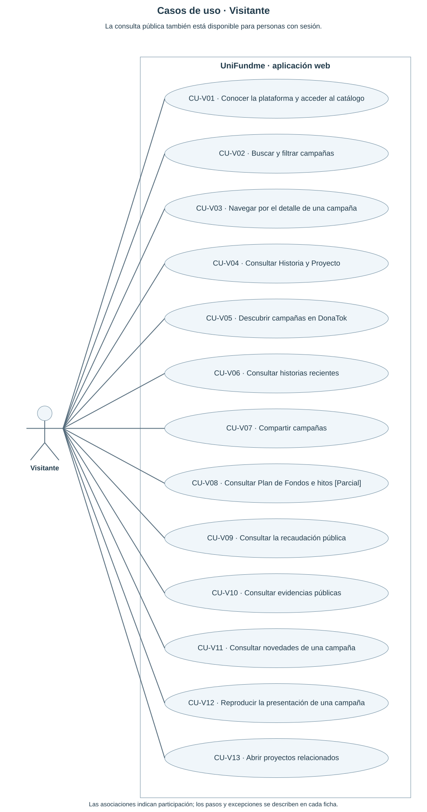
| Paso | Acción de la persona | Respuesta de UniFundme |
|---|---|---|
| 1 | Abre Inicio. | Presenta la propuesta de la plataforma y los accesos públicos. |
| 2 | Selecciona Explorar. | Abre el catálogo de campañas públicas. |
Selecciona Iniciar Sesión y se abre el formulario de acceso.
Continuar en CU-C02.
Se sigue el recorrido principal hacia abajo. En cada condición, Sí conduce a la alternativa indicada; No continúa. La alternativa señala el paso o caso al que volver, o si termina.
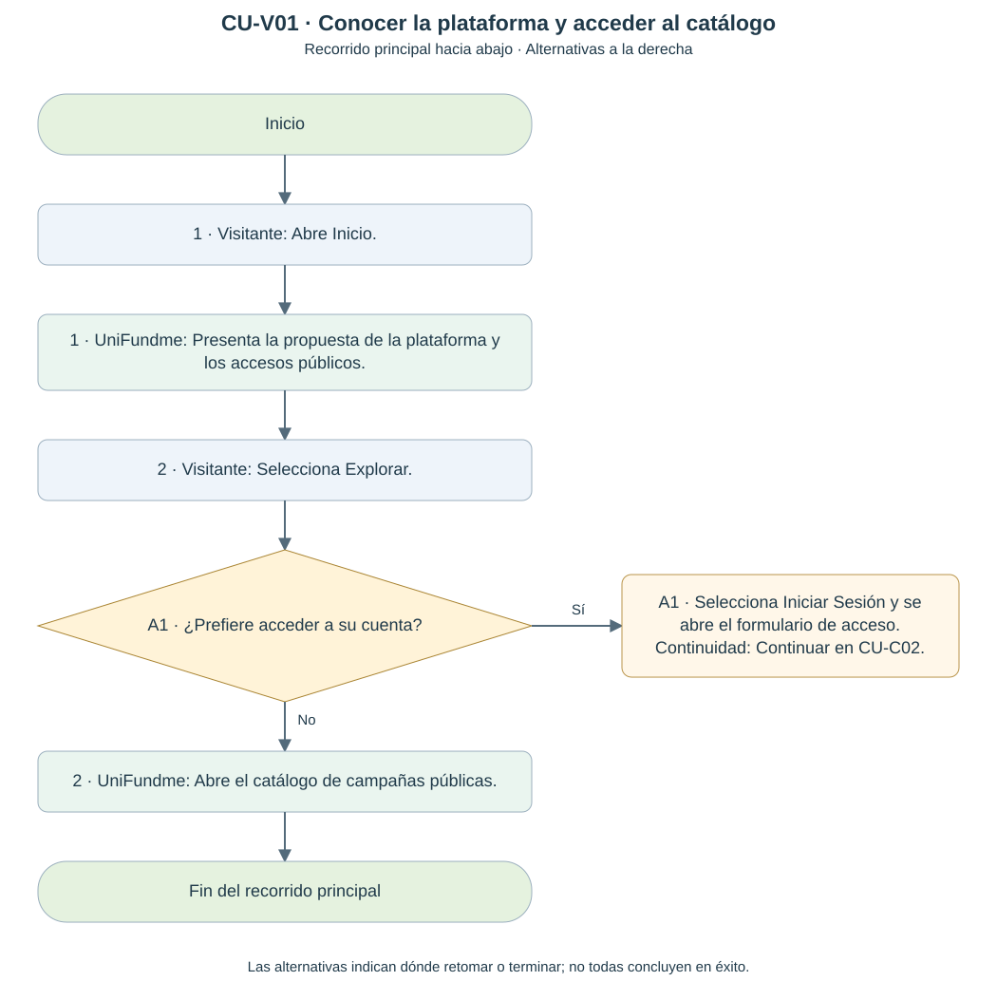
Historia y criterios de aceptación: HU-V01 (3 criterios). Diagramas de navegación: V01.
| Paso | Acción de la persona | Respuesta de UniFundme |
|---|---|---|
| 1 | Escribe un término y lo envía con Enter o Ver todos los resultados. | Solicita y presenta las campañas coincidentes. |
| 2 | Selecciona una categoría en Sector. | Limita el catálogo a la categoría seleccionada. |
| 3 | Recorre las páginas de resultados disponibles. | Muestra la página elegida dentro de los límites de la lista. |
| 4 | Selecciona una campaña. | Abre la ficha de ese proyecto. |
Abre directamente la campaña sugerida.
Continuar en CU-V03.
Presenta Sin Resultados; Limpiar filtros elimina búsqueda y sector. Todos los sectores retira solo el sector.
Retomar el paso 1 o 2.
Se sigue el recorrido principal hacia abajo. En cada condición, Sí conduce a la alternativa indicada; No continúa. La alternativa señala el paso o caso al que volver, o si termina.
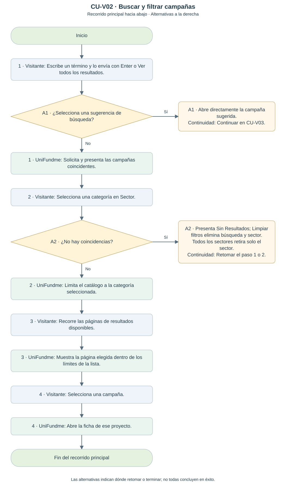
Historia y criterios de aceptación: HU-V02 (5 criterios). Diagramas de navegación: V01.
| Paso | Acción de la persona | Respuesta de UniFundme |
|---|---|---|
| 1 | Abre la campaña desde Explorar o su enlace. | Carga la ficha con título, resumen, creador, Recaudado, Meta, Donantes y Días Restantes si corresponde. |
| 2 | Localiza la barra principal de la ficha. | Ofrece Historia y Proyecto, Transparencia y Fondos, Hitos y Avances y Comentarios. |
| 3 | Selecciona la pestaña que desea consultar. | Muestra el contenido de esa sección y mantiene la navegación de la campaña. |
Presenta el error y permite volver; Reintentar solicita nuevamente la ficha si hubo un fallo de carga.
Reintentar el paso 1 o terminar.
La barra permite desplazar horizontalmente hacia la derecha hasta la cuarta pestaña.
Retomar el paso 3.
Se sigue el recorrido principal hacia abajo. En cada condición, Sí conduce a la alternativa indicada; No continúa. La alternativa señala el paso o caso al que volver, o si termina.
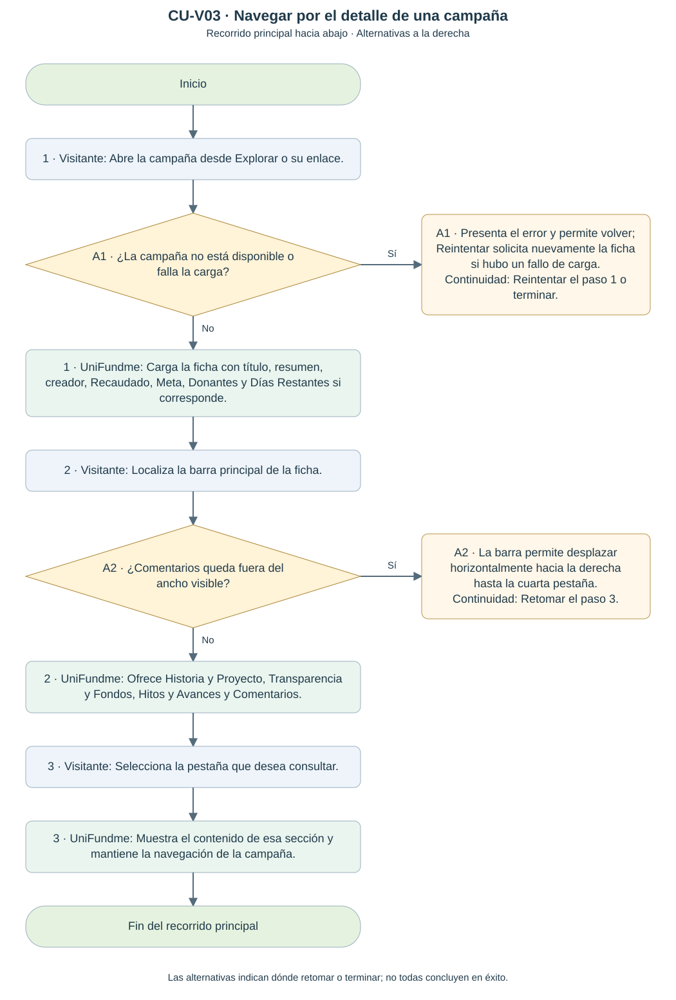
Historia y criterios de aceptación: HU-V03 (4 criterios). Diagramas de navegación: V02.
| Paso | Acción de la persona | Respuesta de UniFundme |
|---|---|---|
| 1 | Selecciona Historia y Proyecto. | Presenta Historia del Proyecto y Sobre el Emprendedor. |
| 2 | Lee la descripción y los datos disponibles del creador. | Muestra además Niveles de Recompensa cuando existen niveles. |
| 3 | Selecciona Ver Transparencia. | Cambia a Transparencia y Fondos. |
Usa Contactar Emprendedor en Sobre el Emprendedor; el contacto requiere sesión y no se ofrece para sí mismo.
Continuar en CU-C05.
La lectura del proyecto continúa sin niveles de recompensa.
Retomar el paso 3 o terminar.
Se sigue el recorrido principal hacia abajo. En cada condición, Sí conduce a la alternativa indicada; No continúa. La alternativa señala el paso o caso al que volver, o si termina.
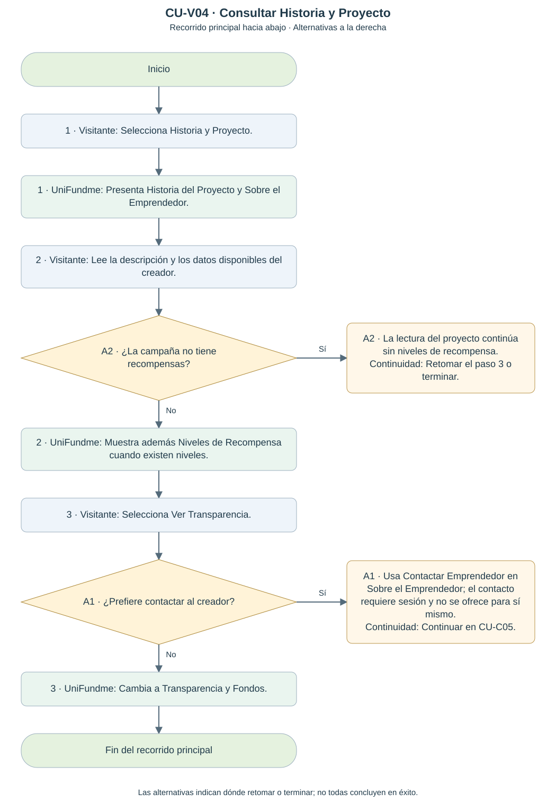
Historia y criterios de aceptación: HU-V04 (4 criterios). Diagramas de navegación: V02.
| Paso | Acción de la persona | Respuesta de UniFundme |
|---|---|---|
| 1 | Abre DonaTok desde la barra superior. | Carga campañas con video y presenta video y resumen. |
| 2 | Se desplaza verticalmente para cambiar de proyecto. | Presenta la campaña correspondiente al video seleccionado. |
| 3 | Pulsa Ver Campaña y Donar. | Abre la ficha pública de esa campaña. |
Presenta el estado vacío o de error correspondiente; la persona puede volver a Explorar.
Terminar o continuar en CU-V02.
Se sigue el recorrido principal hacia abajo. En cada condición, Sí conduce a la alternativa indicada; No continúa. La alternativa señala el paso o caso al que volver, o si termina.
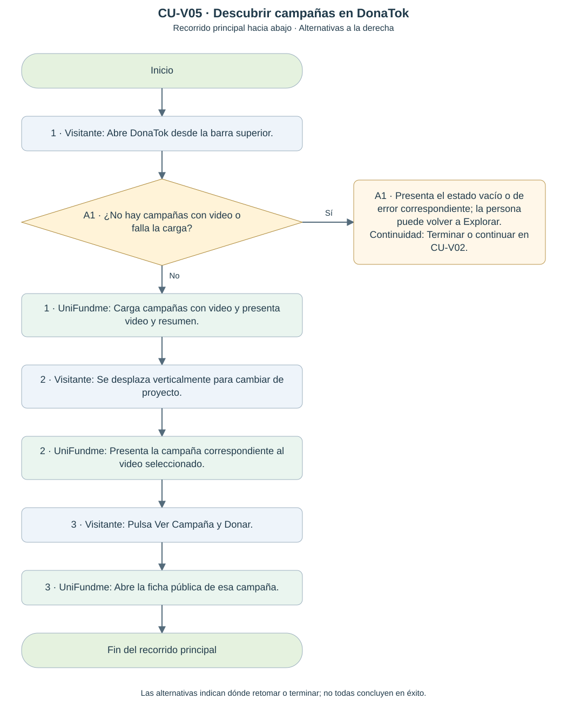
Historia y criterios de aceptación: HU-V05 (4 criterios). Diagramas de navegación: V03.
| Paso | Acción de la persona | Respuesta de UniFundme |
|---|---|---|
| 1 | Selecciona un avatar de la barra de historias. | Abre las novedades recientes de esa campaña en el visor. |
| 2 | Utiliza la navegación anterior o siguiente disponible. | Presenta la historia correspondiente. |
| 3 | Cierra el visor o pulsa Escape. | Vuelve al catálogo. |
La persona sigue consultando el catálogo; no se generan historias ficticias.
Terminar o continuar en CU-V02.
Se sigue el recorrido principal hacia abajo. En cada condición, Sí conduce a la alternativa indicada; No continúa. La alternativa señala el paso o caso al que volver, o si termina.
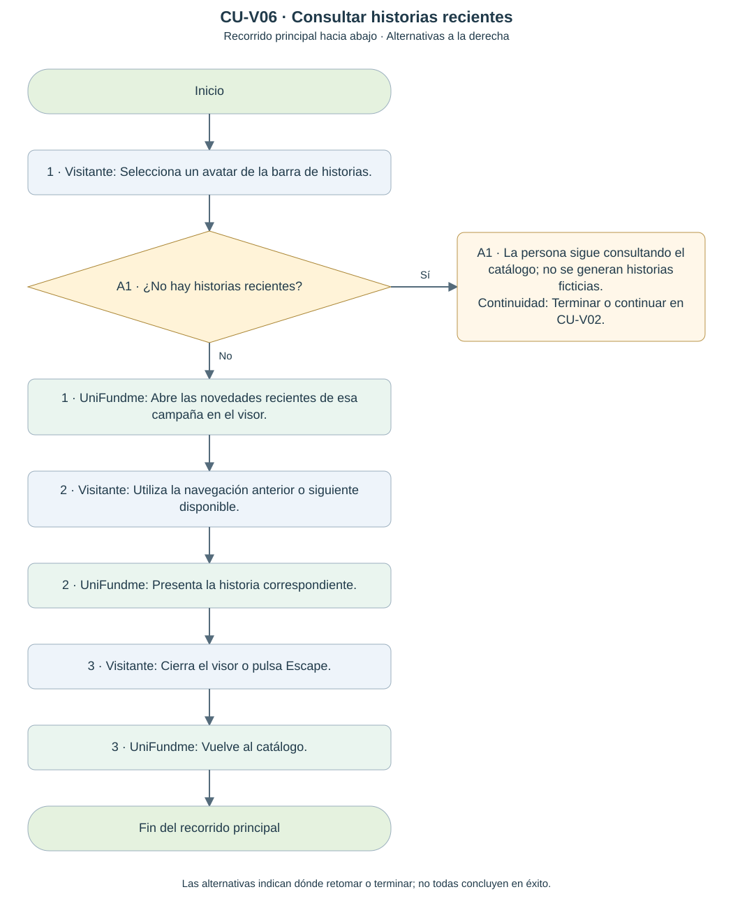
Historia y criterios de aceptación: HU-V06 (4 criterios). Diagramas de navegación: V04.
| Paso | Acción de la persona | Respuesta de UniFundme |
|---|---|---|
| 1 | Pulsa Compartir Campaña en la ficha o el icono de compartir en Explorar. | Abre el diálogo con enlace y opciones WhatsApp, Facebook, X y LinkedIn. |
| 2 | Selecciona Copiar enlace. | Copia la URL de la campaña y confirma la copia. |
| 3 | Cierra el diálogo. | Devuelve a la campaña o al catálogo. |
Abre el enlace de compartir del servicio elegido con la URL de la campaña; la publicación se completa allí.
Volver a la web y retomar el paso 3.
Cierra el diálogo sin modificar la campaña ni sus aportes.
Terminar.
Se sigue el recorrido principal hacia abajo. En cada condición, Sí conduce a la alternativa indicada; No continúa. La alternativa señala el paso o caso al que volver, o si termina.
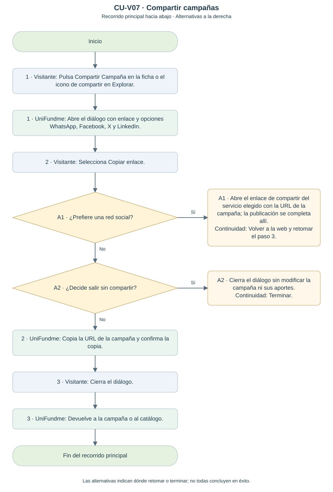
Historia y criterios de aceptación: HU-V07 (4 criterios). Diagramas de navegación: V05.
| Paso | Acción de la persona | Respuesta de UniFundme |
|---|---|---|
| 1 | Selecciona Transparencia y Fondos. | Presenta Plan de Fondos, Auditoría y Movimientos, Hitos del Proyecto, Evidencias y Bitácora. |
| 2 | Selecciona Plan de Fondos. | Muestra las categorías y la distribución que presenta la interfaz. |
| 3 | Selecciona Hitos del Proyecto. | Muestra las etapas y sus estados visibles. |
La persona desplaza horizontalmente la barra de submenús.
Retomar el paso 2 o 3.
Selecciona Hitos y Avances en la barra principal y consulta ambas secciones.
Terminar.
Se sigue el recorrido principal hacia abajo. En cada condición, Sí conduce a la alternativa indicada; No continúa. La alternativa señala el paso o caso al que volver, o si termina.
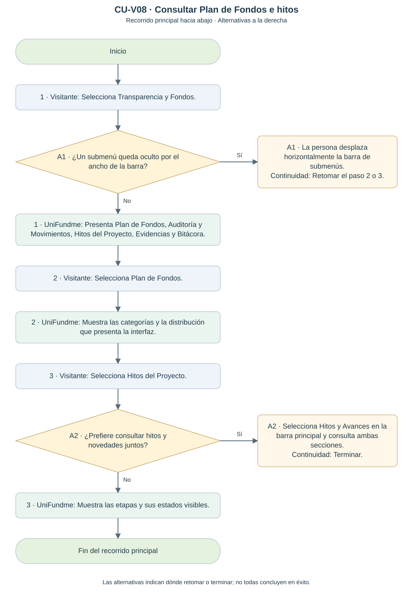
Historia y criterios de aceptación: HU-V08 (4 criterios). Diagramas de navegación: V06 · V02.
Capacidades relacionadas pendientes: HU-P08.
| Paso | Acción de la persona | Respuesta de UniFundme |
|---|---|---|
| 1 | Selecciona Transparencia y Fondos → Auditoría y Movimientos. | Carga los indicadores y gráficos de recaudación disponibles. |
| 2 | Selecciona Todos, Directos o Recompensas. | Filtra la tabla de aportes recientes por el tipo elegido. |
| 3 | Lee los indicadores y aportes visibles. | Mantiene la consulta limitada a la campaña seleccionada. |
Presenta la ausencia de transacciones para ese filtro.
Cambiar el filtro en el paso 2 o terminar.
Muestra el error y Reintentar; el error no equivale a recaudación cero.
Reintentar el paso 1.
Se sigue el recorrido principal hacia abajo. En cada condición, Sí conduce a la alternativa indicada; No continúa. La alternativa señala el paso o caso al que volver, o si termina.
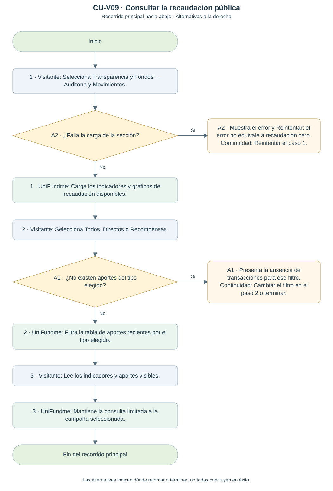
Historia y criterios de aceptación: HU-V09 (4 criterios). Diagramas de navegación: V06.
| Paso | Acción de la persona | Respuesta de UniFundme |
|---|---|---|
| 1 | Selecciona Transparencia y Fondos → Evidencias. | Lista las evidencias públicas con su nombre y justificación disponible. |
| 2 | Pulsa Abrir documento en la evidencia elegida. | Comprueba su acceso público y abre el archivo en otra pestaña. |
| 3 | Regresa a la pestaña de la campaña. | Conserva la ficha para seguir consultándola. |
Muestra No hay evidencias públicas disponibles.
Terminar.
Presenta el error y Reintentar.
Reintentar el paso 1.
No permite obtenerlo por su acceso público.
Volver al paso 1 o terminar.
Se sigue el recorrido principal hacia abajo. En cada condición, Sí conduce a la alternativa indicada; No continúa. La alternativa señala el paso o caso al que volver, o si termina.
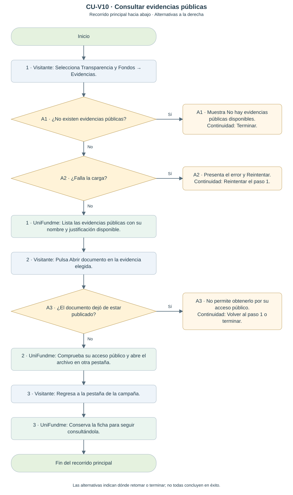
Historia y criterios de aceptación: HU-V10 (4 criterios). Diagramas de navegación: V06.
| Paso | Acción de la persona | Respuesta de UniFundme |
|---|---|---|
| 1 | Selecciona Hitos y Avances o Transparencia y Fondos → Bitácora. | Solicita las novedades de esa campaña. |
| 2 | Lee las publicaciones y sus adjuntos disponibles. | Presenta el contenido público asociado al proyecto. |
Presenta el estado sin novedades.
Terminar.
Presenta el error y permite Reintentar para la misma campaña.
Reintentar el paso 1.
Se sigue el recorrido principal hacia abajo. En cada condición, Sí conduce a la alternativa indicada; No continúa. La alternativa señala el paso o caso al que volver, o si termina.
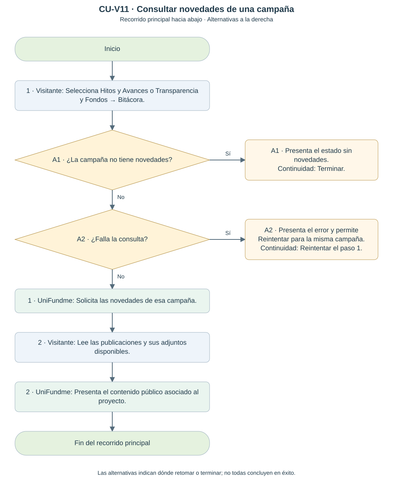
Historia y criterios de aceptación: HU-V11 (3 criterios). Diagramas de navegación: V02 · V06.
| Paso | Acción de la persona | Respuesta de UniFundme |
|---|---|---|
| 1 | Pulsa Ver Pitch sobre la portada. | Despliega el reproductor asociado a esa campaña. |
| 2 | Consulta la presentación. | Ofrece el contenido del video mediante el reproductor disponible. |
| 3 | Pulsa Ocultar Pitch. | Oculta la sección del reproductor. |
No ofrece Ver Pitch.
Terminar.
Se sigue el recorrido principal hacia abajo. En cada condición, Sí conduce a la alternativa indicada; No continúa. La alternativa señala el paso o caso al que volver, o si termina.
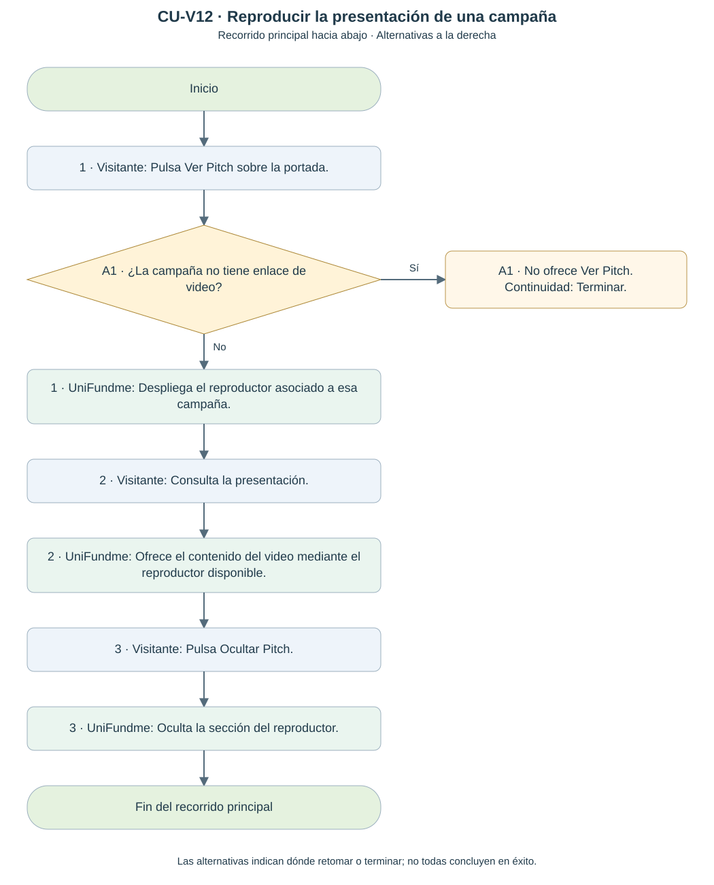
Historia y criterios de aceptación: HU-V12 (3 criterios). Diagramas de navegación: V02.
| Paso | Acción de la persona | Respuesta de UniFundme |
|---|---|---|
| 1 | Consulta También te puede interesar. | Puede mostrar hasta tres campañas de la misma categoría, excluyendo la actual. |
| 2 | Selecciona una sugerencia. | Abre la ficha de la campaña elegida. |
No muestra esa sección; la persona puede seguir buscando en Explorar.
Continuar en CU-V02 o terminar.
Se sigue el recorrido principal hacia abajo. En cada condición, Sí conduce a la alternativa indicada; No continúa. La alternativa señala el paso o caso al que volver, o si termina.
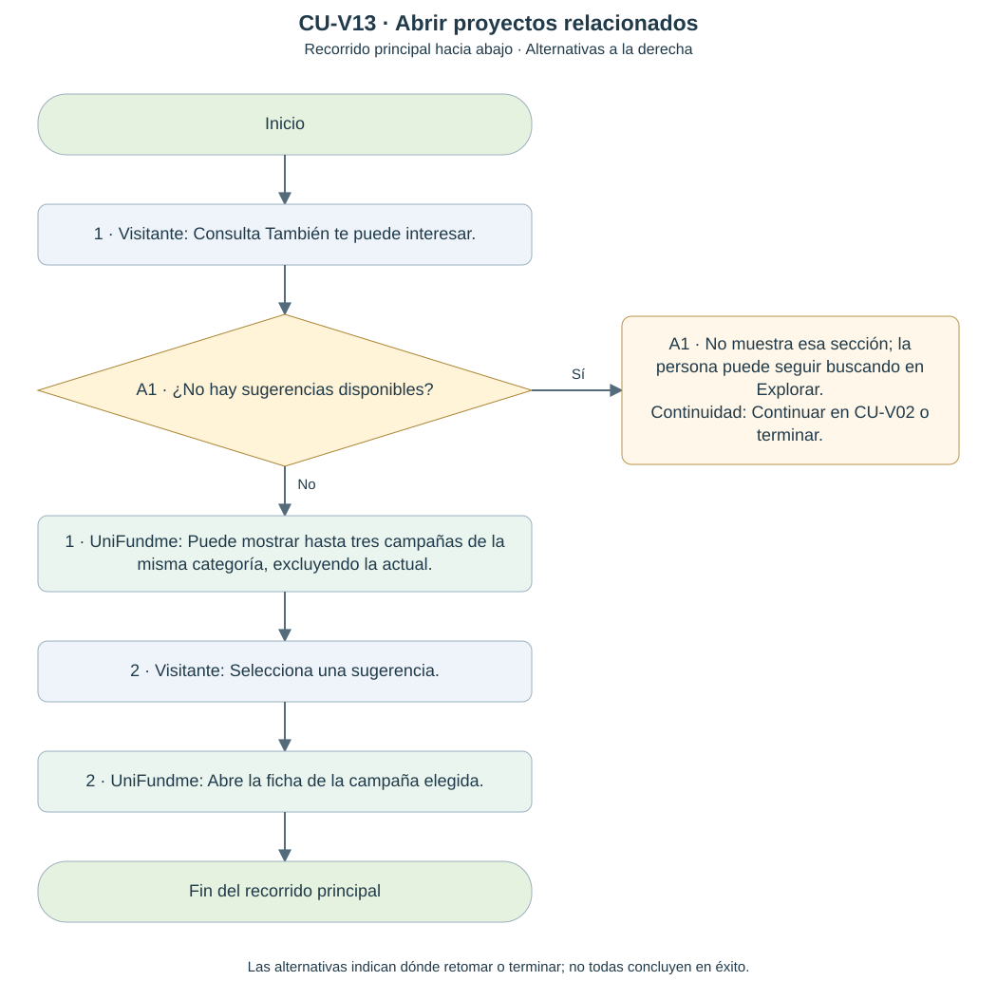
Historia y criterios de aceptación: HU-V13 (3 criterios). Diagramas de navegación: V02.
Los óvalos representan objetivos y las líneas indican quién participa. Su posición vertical no define el orden de ejecución.
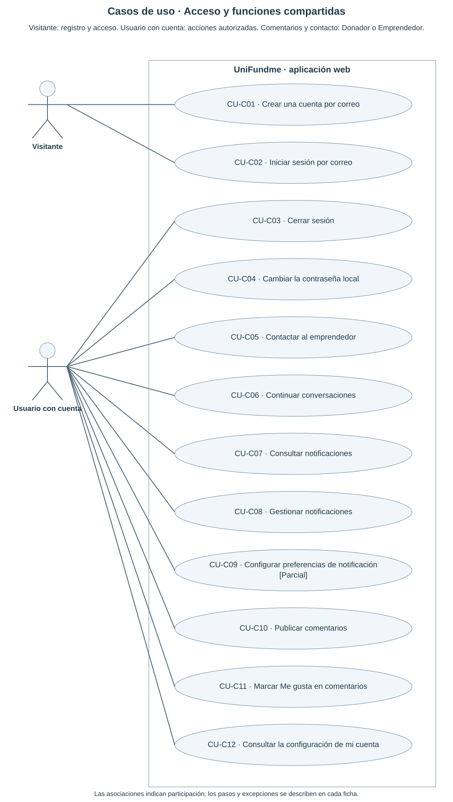
| Paso | Acción de la persona | Respuesta de UniFundme |
|---|---|---|
| 1 | Abre Iniciar Sesión → Crea tu cuenta. | Presenta el formulario de registro. |
| 2 | Elige Donador o Emprendedor e introduce correo y contraseña válidos. | Valida los datos y la disponibilidad del correo al enviar el formulario. |
| 3 | Envía el registro. | Crea la cuenta, inicia sesión y abre Mi Panel para Donador o Mi Perfil para Emprendedor. |
Rechaza el registro e informa el problema, sin crear otra cuenta.
Corregir y retomar el paso 2.
Se sigue el recorrido principal hacia abajo. En cada condición, Sí conduce a la alternativa indicada; No continúa. La alternativa señala el paso o caso al que volver, o si termina.
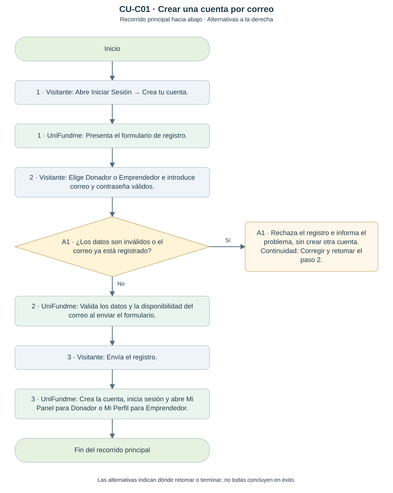
Historia y criterios de aceptación: HU-C01 (4 criterios). Diagramas de navegación: C01.
| Paso | Acción de la persona | Respuesta de UniFundme |
|---|---|---|
| 1 | Abre Iniciar Sesión e introduce correo y contraseña. | Presenta los campos y permite seleccionar Recordarme para conservar el correo. |
| 2 | Envía el formulario. | Valida credenciales, estado de la cuenta, roles y nivel administrativo. |
| 3 | Continúa tras una autenticación correcta. | Abre /superadmin o /admin para cuentas administrativas; para los otros roles vuelve a la ruta solicitada, o a Mi Panel o Mi Perfil si no había una ruta previa. |
No concede una sesión válida y presenta el error.
Corregir datos en el paso 1 o terminar.
Se sigue el recorrido principal hacia abajo. En cada condición, Sí conduce a la alternativa indicada; No continúa. La alternativa señala el paso o caso al que volver, o si termina.
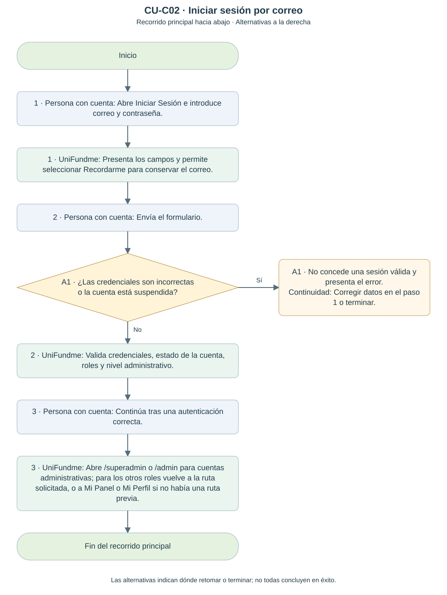
Historia y criterios de aceptación: HU-C02 (5 criterios). Diagramas de navegación: C02.
| Paso | Acción de la persona | Respuesta de UniFundme |
|---|---|---|
| 1 | Usa Salir, Cerrar Sesión del panel administrativo o Configuración → Cerrar sesión. | Inicia el cierre; en Configuración solicita confirmación. |
| 2 | Confirma cuando la pantalla lo solicita. | Cierra el acceso local y vuelve a Iniciar Sesión. |
| 3 | Intenta abrir una ruta privada tras salir. | Solicita iniciar sesión de nuevo. |
Mantiene la sesión abierta.
Terminar sin cerrar sesión.
Se sigue el recorrido principal hacia abajo. En cada condición, Sí conduce a la alternativa indicada; No continúa. La alternativa señala el paso o caso al que volver, o si termina.
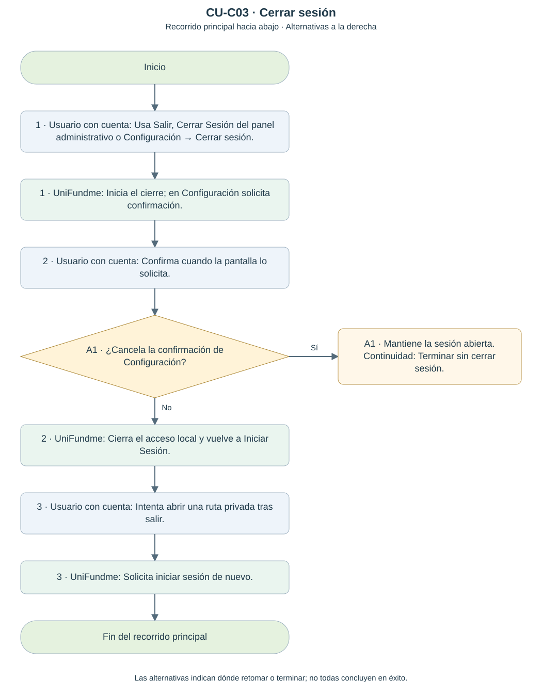
Historia y criterios de aceptación: HU-C03 (4 criterios). Diagramas de navegación: C07.
| Paso | Acción de la persona | Respuesta de UniFundme |
|---|---|---|
| 1 | Abre Configuración → Seguridad y Acceso. | Presenta el formulario de cambio de contraseña local. |
| 2 | Introduce contraseña actual, nueva válida y confirmación; pulsa Actualizar contraseña. | Valida contraseña actual, coincidencia, requisitos y que la nueva sea distinta. |
| 3 | Continúa después de la confirmación correcta. | Guarda la nueva contraseña, conserva la sesión actual y revoca las demás. |
Rechaza el cambio y muestra el error; no sustituye la contraseña.
Corregir y retomar el paso 2.
No ofrece este formulario; Google continúa no disponible.
Terminar.
Se sigue el recorrido principal hacia abajo. En cada condición, Sí conduce a la alternativa indicada; No continúa. La alternativa señala el paso o caso al que volver, o si termina.
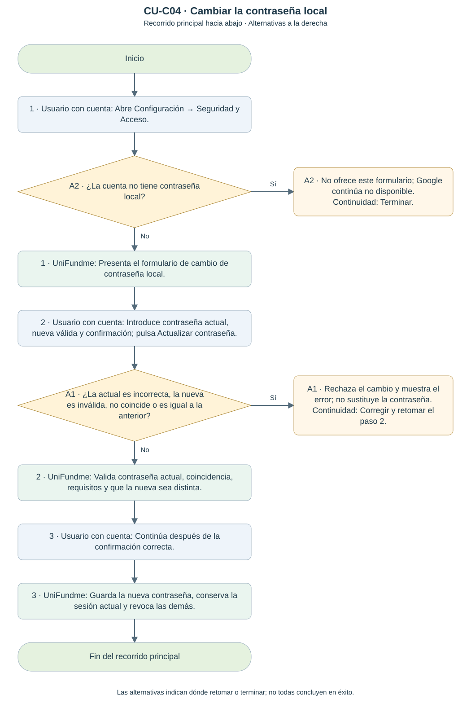
Historia y criterios de aceptación: HU-C04 (5 criterios). Diagramas de navegación: C06.
| Paso | Acción de la persona | Respuesta de UniFundme |
|---|---|---|
| 1 | Abre Historia y Proyecto y baja hasta Sobre el Emprendedor. | Presenta Contactar Emprendedor cuando el creador no es la propia persona. |
| 2 | Pulsa Contactar Emprendedor. | Abre o recupera la conversación asociada al destinatario y campaña. |
| 3 | Consulta la conversación abierta. | Presenta el chat para continuar con el intercambio de mensajes. |
Abre Iniciar Sesión; tras acceder la persona puede regresar y volver a usar el contacto.
Continuar en CU-C02 y retomar el paso 2.
No ofrece una conversación consigo misma.
Terminar.
Se sigue el recorrido principal hacia abajo. En cada condición, Sí conduce a la alternativa indicada; No continúa. La alternativa señala el paso o caso al que volver, o si termina.
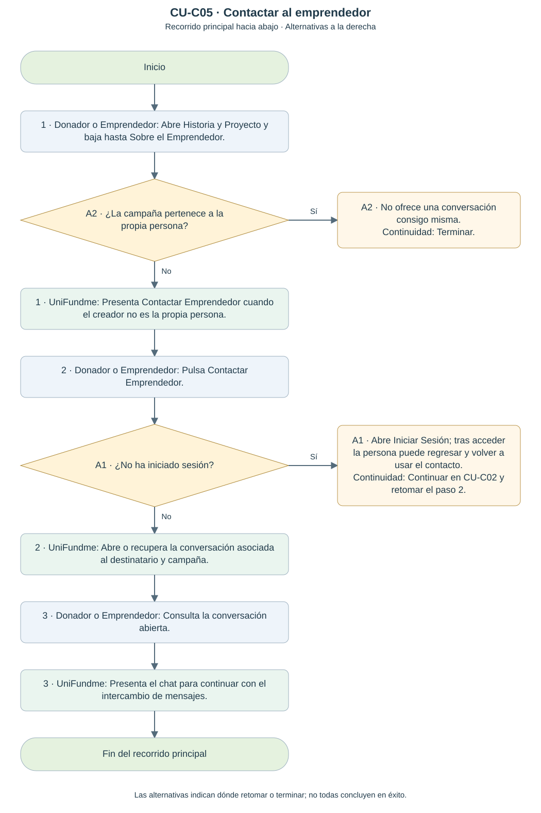
Historia y criterios de aceptación: HU-C05 (3 criterios). Diagramas de navegación: C03.
| Paso | Acción de la persona | Respuesta de UniFundme |
|---|---|---|
| 1 | Abre Mensajes y selecciona una conversación. | Muestra el destinatario y el historial autorizado. |
| 2 | Consulta mensajes anteriores con el desplazamiento o Ver mensajes anteriores cuando aparece. | Carga el historial previo sin duplicar lo ya mostrado. |
| 3 | Escribe un texto y usa el icono Enviar mensaje o Enter. | Envía el mensaje y lo incorpora a la conversación si la operación se completa. |
Informa que no se pudo enviar y permite intentar de nuevo; no lo confirma como entregado.
Reintentar el paso 3.
Se sigue el recorrido principal hacia abajo. En cada condición, Sí conduce a la alternativa indicada; No continúa. La alternativa señala el paso o caso al que volver, o si termina.
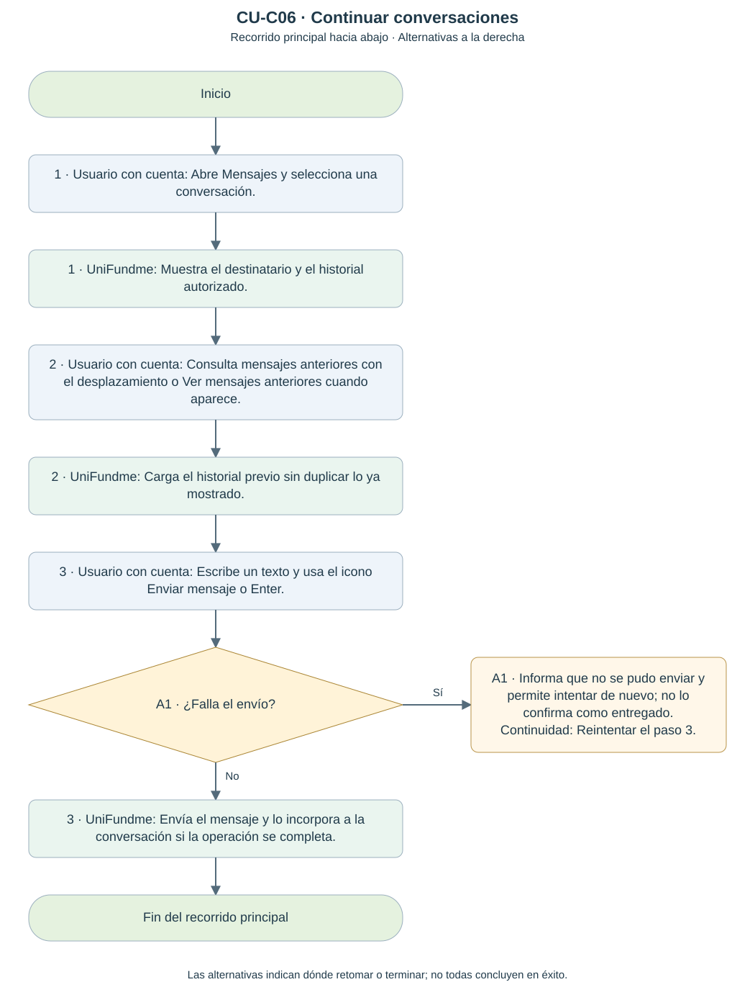
Historia y criterios de aceptación: HU-C06 (4 criterios). Diagramas de navegación: C03.
| Paso | Acción de la persona | Respuesta de UniFundme |
|---|---|---|
| 1 | Abre la campana o el centro de notificaciones. | Carga sus avisos y el indicador de no leídas. |
| 2 | Aplica los filtros disponibles y recorre las páginas. | Muestra los avisos coincidentes de su cuenta. |
| 3 | Abre una notificación. | Registra la lectura y navega al destino si el aviso tiene uno asociado. |
Presenta el estado vacío y Restablecer filtros permite quitar las selecciones.
Retomar el paso 2 o terminar.
Se sigue el recorrido principal hacia abajo. En cada condición, Sí conduce a la alternativa indicada; No continúa. La alternativa señala el paso o caso al que volver, o si termina.
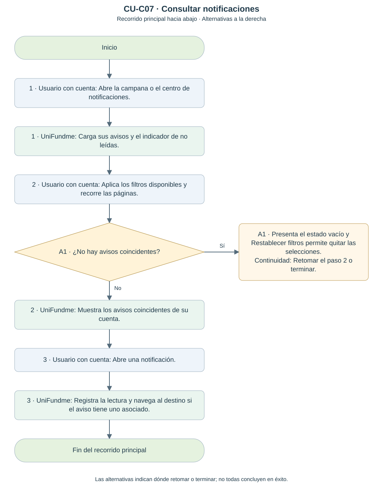
Historia y criterios de aceptación: HU-C07 (4 criterios). Diagramas de navegación: C04.
| Paso | Acción de la persona | Respuesta de UniFundme |
|---|---|---|
| 1 | Usa la opción de marcar todas como leídas. | Marca sus notificaciones existentes y actualiza el contador. |
| 2 | Elimina un aviso con su control disponible. | Retira ese aviso de su cuenta si la operación se completa. |
| 3 | Consulta la campana o el centro de notificaciones. | Refleja los avisos y contadores actualizados. |
Usa la opción de limpiar las leídas; retira solo esas y conserva las no leídas.
Retomar el paso 3.
Omite marcar todas y usa directamente el control de eliminación del aviso.
Continuar en el paso 2.
Se sigue el recorrido principal hacia abajo. En cada condición, Sí conduce a la alternativa indicada; No continúa. La alternativa señala el paso o caso al que volver, o si termina.
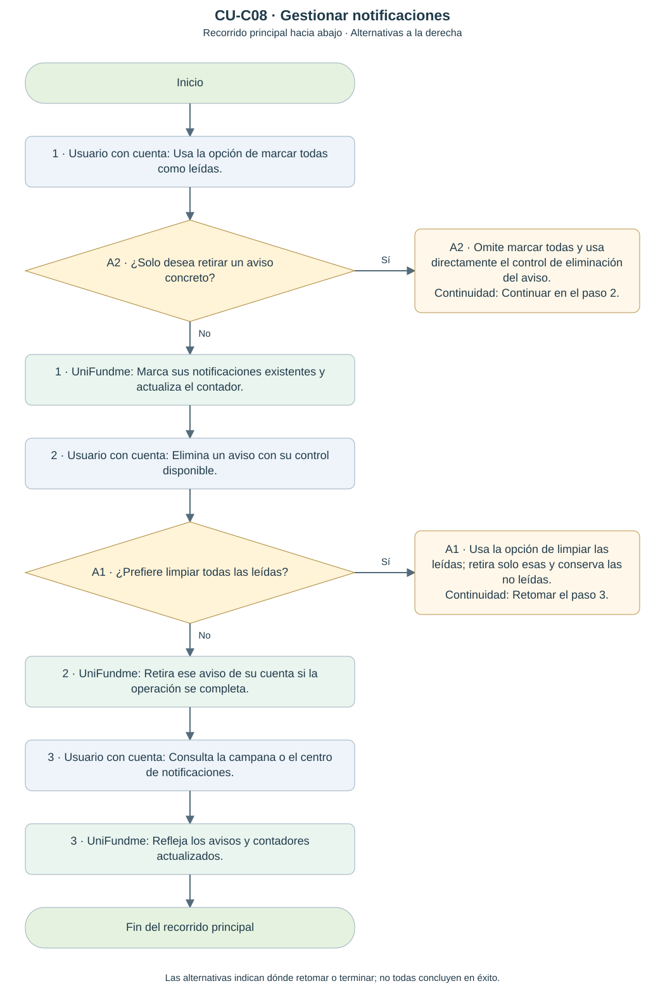
Historia y criterios de aceptación: HU-C08 (4 criterios). Diagramas de navegación: C04.
| Paso | Acción de la persona | Respuesta de UniFundme |
|---|---|---|
| 1 | Abre Preferencias. | Carga los valores actuales de configuración. |
| 2 | Cambia los interruptores disponibles y guarda. | Persiste los valores, confirma y cierra el diálogo si la operación termina correctamente. |
| 3 | Vuelve a consultar las preferencias o recibe eventos cubiertos posteriormente. | Conserva los valores y aplica las preferencias a la generación de avisos correspondiente. |
No permite guardar valores de reemplazo sin haber cargado la configuración.
Volver a abrir Preferencias o terminar.
Se sigue el recorrido principal hacia abajo. En cada condición, Sí conduce a la alternativa indicada; No continúa. La alternativa señala el paso o caso al que volver, o si termina.
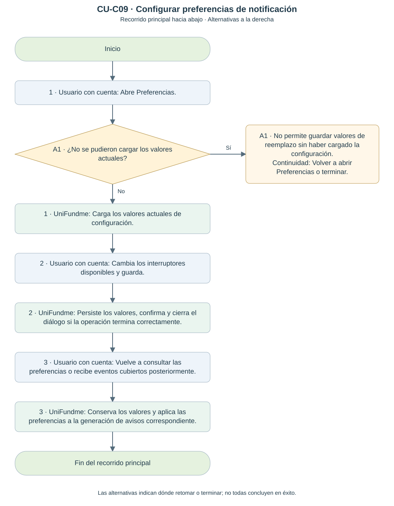
Historia y criterios de aceptación: HU-C09 (4 criterios). Diagramas de navegación: C05.
Capacidades relacionadas pendientes: HU-P14.
| Paso | Acción de la persona | Respuesta de UniFundme |
|---|---|---|
| 1 | Selecciona Comentarios, cuarta pestaña principal después de Hitos y Avances. | Presenta los comentarios y, si la campaña admite participación, el cuadro Escribe un comentario... |
| 2 | Escribe un comentario no vacío de hasta 2000 caracteres y usa el icono de enviar. | Valida la participación y registra el comentario en esa campaña. |
| 3 | Consulta la lista actualizada. | Presenta el comentario publicado. |
La persona desplaza la barra principal horizontalmente a la derecha.
Retomar el paso 1.
Solicita Inicia sesión o impide el envío vacío, según corresponda.
Iniciar sesión en CU-C02 o corregir en el paso 2.
Permite leer comentarios pero no muestra el cuadro para publicar.
Terminar con consulta de solo lectura.
Se sigue el recorrido principal hacia abajo. En cada condición, Sí conduce a la alternativa indicada; No continúa. La alternativa señala el paso o caso al que volver, o si termina.
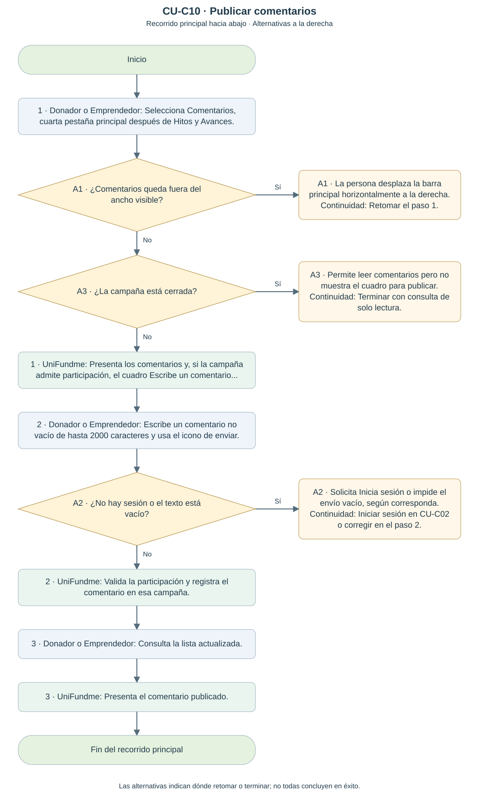
Historia y criterios de aceptación: HU-C10 (5 criterios). Diagramas de navegación: C09.
| Paso | Acción de la persona | Respuesta de UniFundme |
|---|---|---|
| 1 | Abre Comentarios y localiza un comentario. | Muestra el icono de pulgar arriba y su contador. |
| 2 | Pulsa el pulgar arriba. | Registra su Me gusta y actualiza el contador. |
Retira su marca y ajusta el contador; no acumula marcas de la misma cuenta.
Terminar.
Solicita iniciar sesión antes de marcar.
Continuar en CU-C02 y volver al paso 2.
Mantiene deshabilitado el control de Me gusta.
Terminar sin cambiar marcas.
Se sigue el recorrido principal hacia abajo. En cada condición, Sí conduce a la alternativa indicada; No continúa. La alternativa señala el paso o caso al que volver, o si termina.
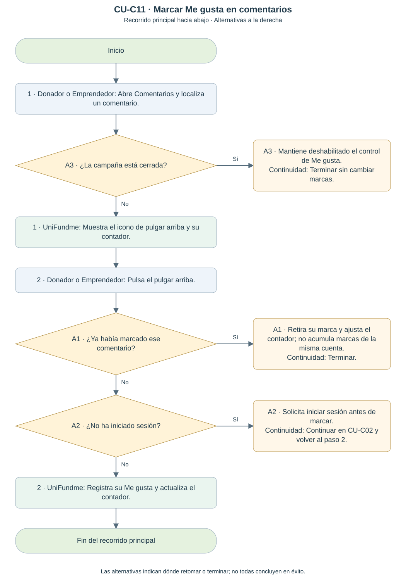
Historia y criterios de aceptación: HU-C11 (4 criterios). Diagramas de navegación: C09.
| Paso | Acción de la persona | Respuesta de UniFundme |
|---|---|---|
| 1 | Abre Configuración → Configuración de Cuenta. | Muestra correo, indicador Verificado o Sin verificar y Último acceso según los datos disponibles. |
| 2 | Consulta Mi Perfil y selecciona Perfil de Donador o Perfil de Emprendedor cuando corresponde. | Abre el perfil asociado a su rol. |
Usa Seguridad y Acceso para cambiar la contraseña local o cerrar sesión mediante sus acciones disponibles.
Se sigue el recorrido principal hacia abajo. En cada condición, Sí conduce a la alternativa indicada; No continúa. La alternativa señala el paso o caso al que volver, o si termina.
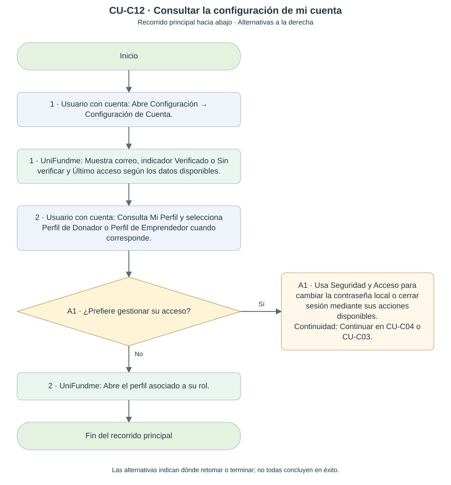
Historia y criterios de aceptación: HU-C12 (3 criterios). Diagramas de navegación: C06 · C07.
Capacidades relacionadas pendientes: HU-P17.
Los óvalos representan objetivos y las líneas indican quién participa. Su posición vertical no define el orden de ejecución.
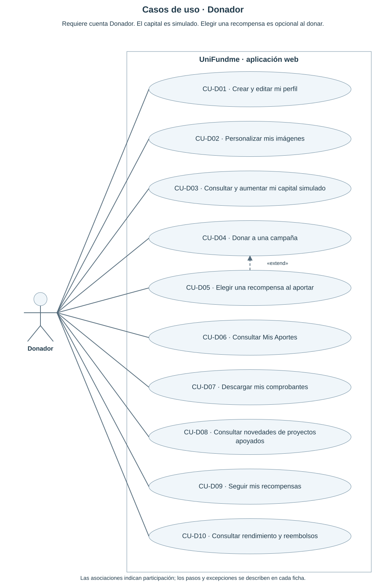
| Paso | Acción de la persona | Respuesta de UniFundme |
|---|---|---|
| 1 | Abre Mi Perfil. | Presenta su perfil o propone completar los datos básicos si todavía no existe. |
| 2 | Usa la edición de la sección deseada y guarda datos válidos. | Valida y conserva los cambios de esa sección. |
| 3 | Consulta Donaciones, Información o Capital / Fondos. | Muestra el contenido correspondiente con los datos guardados. |
Rechaza el cambio sin reducir el capital bajo ese límite.
Corregir y retomar el paso 2.
Se sigue el recorrido principal hacia abajo. En cada condición, Sí conduce a la alternativa indicada; No continúa. La alternativa señala el paso o caso al que volver, o si termina.
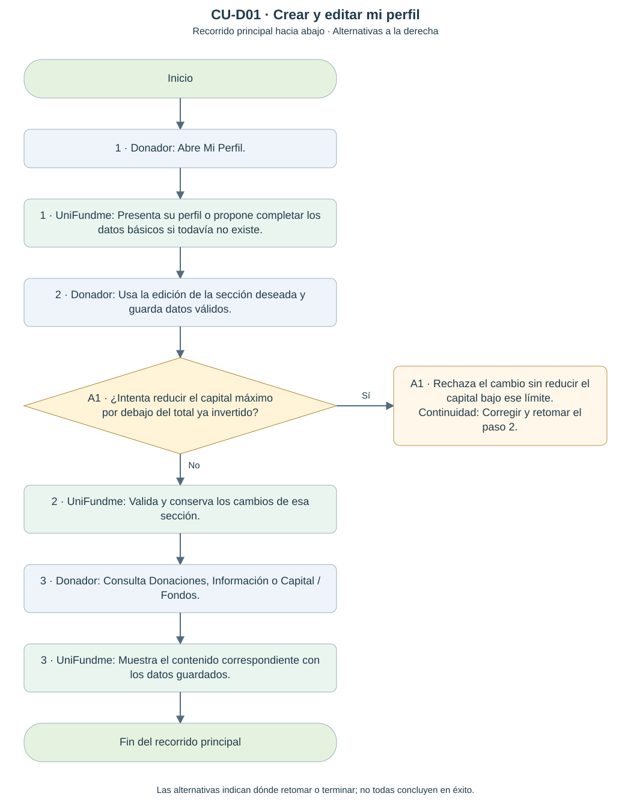
Historia y criterios de aceptación: HU-D01 (4 criterios). Diagramas de navegación: D01.
| Paso | Acción de la persona | Respuesta de UniFundme |
|---|---|---|
| 1 | Abre el control de foto o portada en Mi Perfil. | Permite seleccionar una imagen. |
| 2 | Selecciona JPG/JPEG, PNG, WEBP o AVIF de hasta 10 MB y completa la carga. | Valida el archivo y actualiza la imagen correspondiente si la carga es correcta. |
| 3 | Vuelve a consultar el perfil. | Presenta la imagen guardada. |
No sustituye la imagen anterior por la selección cancelada o rechazada.
Elegir otro archivo en el paso 2 o terminar.
Se sigue el recorrido principal hacia abajo. En cada condición, Sí conduce a la alternativa indicada; No continúa. La alternativa señala el paso o caso al que volver, o si termina.
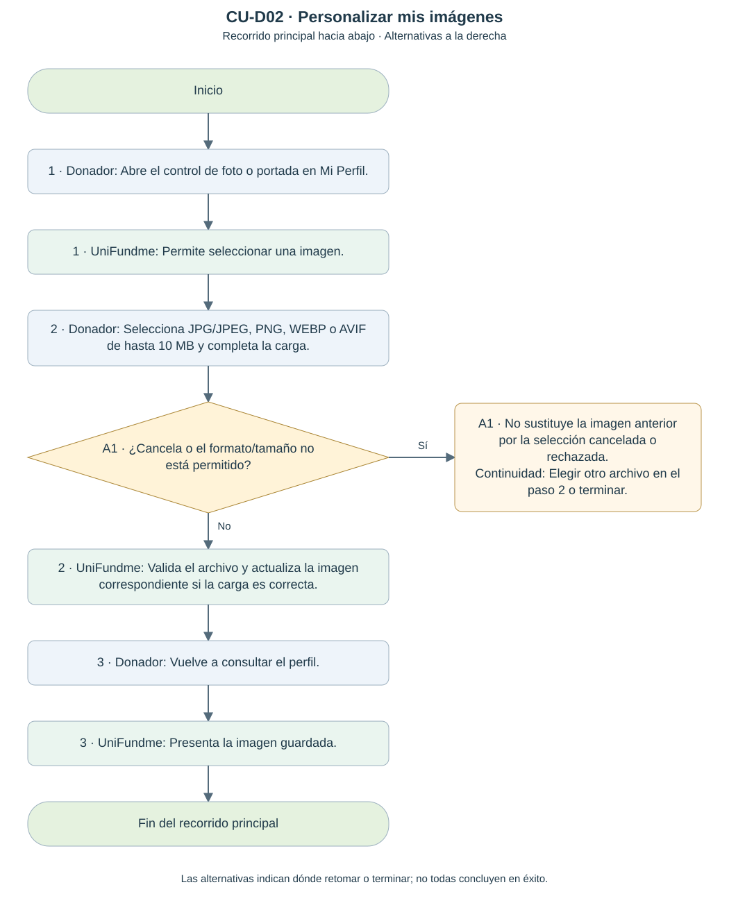
Historia y criterios de aceptación: HU-D02 (4 criterios). Diagramas de navegación: D01.
| Paso | Acción de la persona | Respuesta de UniFundme |
|---|---|---|
| 1 | Abre Mi Panel. | Presenta Capital Disponible, Total Donado, número de donaciones y Aumentar Capital. |
| 2 | Selecciona Aumentar Capital y elige un monto sugerido o escribe uno; añade notas opcionales. | Presenta la confirmación y exige un monto mínimo de Bs. 100 en el formulario. |
| 3 | Confirma un monto permitido. | Aumenta capital configurado y disponible por ese importe si la operación es correcta. |
El formulario no permite enviar el aumento.
Corregir el monto en el paso 2.
Se sigue el recorrido principal hacia abajo. En cada condición, Sí conduce a la alternativa indicada; No continúa. La alternativa señala el paso o caso al que volver, o si termina.
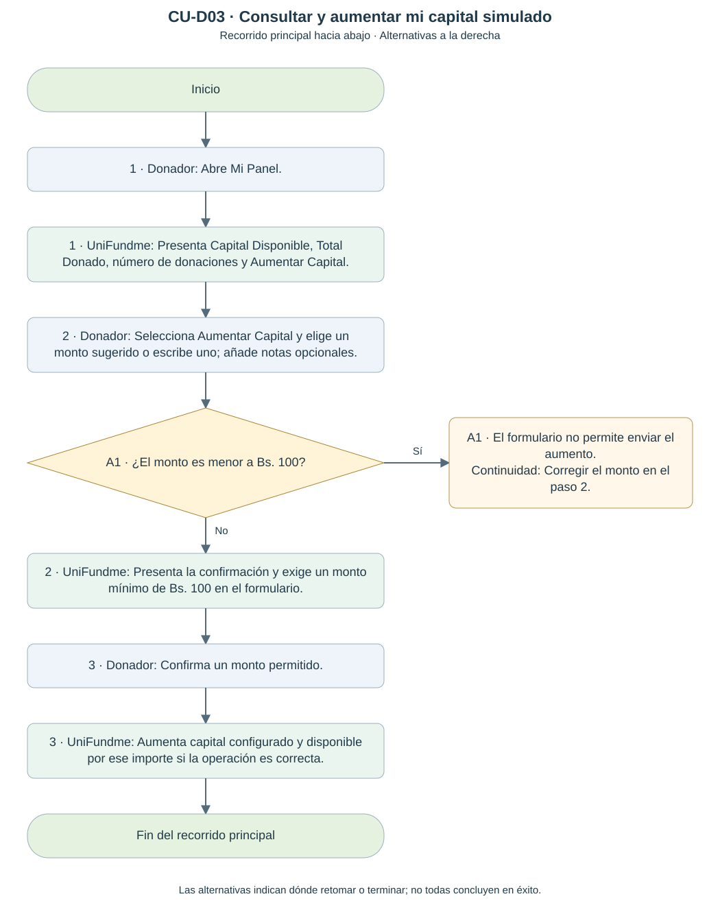
Historia y criterios de aceptación: HU-D03 (4 criterios). Diagramas de navegación: D02.
| Paso | Acción de la persona | Respuesta de UniFundme |
|---|---|---|
| 1 | Abre la ficha e introduce un monto permitido. | Actualiza el formulario y el botón Donar Bs. [monto]. |
| 2 | Pulsa Donar Bs. [monto]. | Abre Confirmar Aporte con campaña, monto y recompensa seleccionada si existe. |
| 3 | Confirma el aporte. | Valida saldo, estado, fecha, límites y recompensa; registra el aporte y actualiza saldo y recaudación en una sola operación correcta. |
| 4 | Consulta la confirmación y su panel. | Presenta el aporte registrado y permite continuar a sus comprobantes cuando corresponde. |
No registra el aporte ni descuenta saldo.
Terminar o volver al paso 1.
Rechaza el aporte sin descuento parcial de saldo.
Revisar condiciones y volver al paso 1 o terminar.
Iniciar Sesión para Donar abre el acceso; una campaña propia, cerrada o vencida no habilita el aporte.
Continuar en CU-C02 si falta sesión; en los demás casos terminar.
Se sigue el recorrido principal hacia abajo. En cada condición, Sí conduce a la alternativa indicada; No continúa. La alternativa señala el paso o caso al que volver, o si termina.
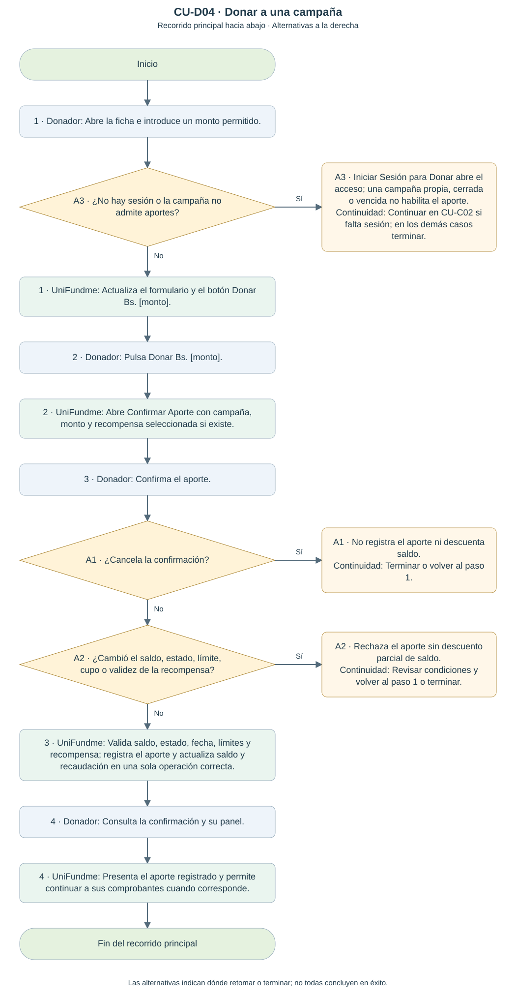
Historia y criterios de aceptación: HU-D04 (6 criterios). Diagramas de navegación: D03.
| Paso | Acción de la persona | Respuesta de UniFundme |
|---|---|---|
| 1 | Consulta Historia y Proyecto → Niveles de Recompensa y selecciona un nivel. | Refleja el nivel elegido y su monto sugerido en el formulario de aporte. |
| 2 | Ajusta el monto dentro del rango del nivel y abre Confirmar Aporte. | Presenta la recompensa exacta seleccionada. |
| 3 | Confirma el aporte. | Comprueba rango, moneda, vigencia y cupos y asocia exactamente ese nivel al aporte correcto. |
Rechaza la operación sin sustituir silenciosamente la recompensa por otra.
Ajustar monto o selección en el paso 1 o 2.
Usa Aportar sin recompensa y retira la selección.
Continuar en CU-D04 sin recompensa.
Se sigue el recorrido principal hacia abajo. En cada condición, Sí conduce a la alternativa indicada; No continúa. La alternativa señala el paso o caso al que volver, o si termina.
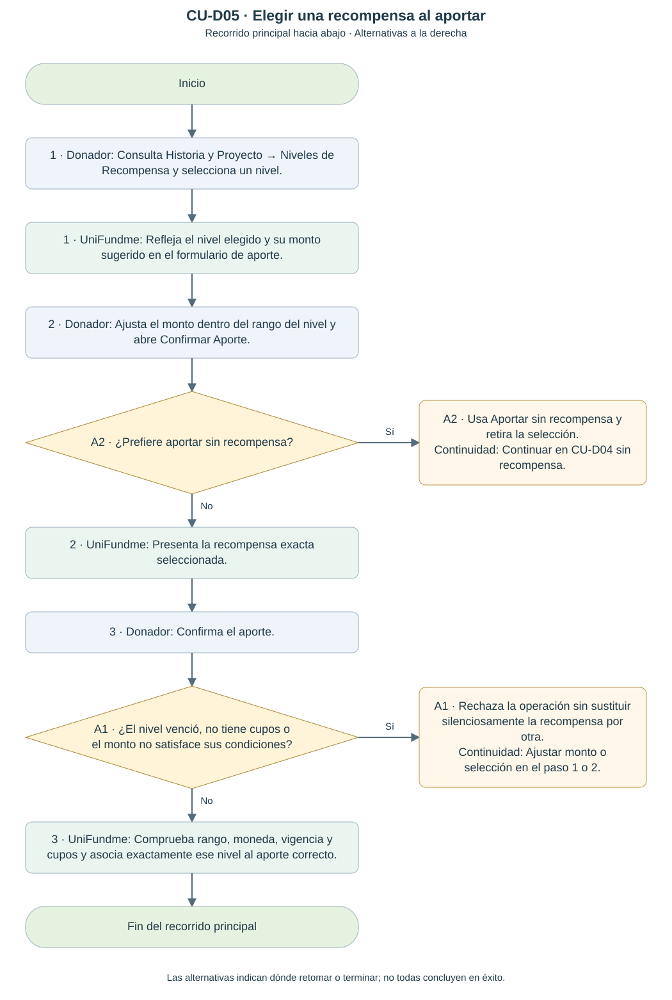
Historia y criterios de aceptación: HU-D05 (4 criterios). Diagramas de navegación: D03 · D07.
| Paso | Acción de la persona | Respuesta de UniFundme |
|---|---|---|
| 1 | Abre Mi Panel → Mis Aportes. | Presenta sus campañas, fechas, montos y estados. |
| 2 | Busca por proyecto y aplica estado, fecha u orden disponibles. | Muestra las coincidencias con el orden elegido. |
| 3 | Selecciona Ver proyecto. | Abre la ficha si la campaña conserva acceso público. |
Recibo se ofrece solo en aportes completados.
Continuar en CU-D07.
La consulta no agrega registros; la persona puede cambiar los filtros.
Retomar el paso 2 o terminar.
Se sigue el recorrido principal hacia abajo. En cada condición, Sí conduce a la alternativa indicada; No continúa. La alternativa señala el paso o caso al que volver, o si termina.
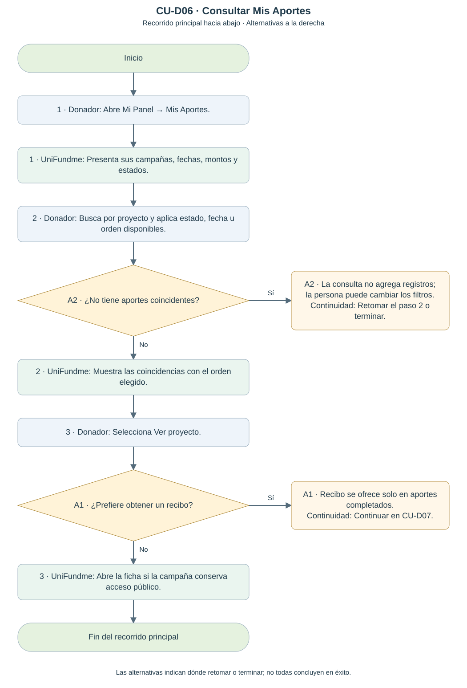
Historia y criterios de aceptación: HU-D06 (4 criterios). Diagramas de navegación: D04.
| Paso | Acción de la persona | Respuesta de UniFundme |
|---|---|---|
| 1 | Abre Mi Panel → Comprobantes y busca por proyecto o código de recibo. | Lista sus aportes completados disponibles para comprobante. |
| 2 | Selecciona Descargar PDF en el aporte elegido. | Verifica propiedad y estado y genera el comprobante individual. |
| 3 | Recibe la descarga del navegador. | Entrega el archivo correspondiente a ese aporte. |
Solicita el comprobante de ese mismo aporte completado.
Continuar en el paso 2.
No permite una descarga no autorizada; si falla la generación informa el error y permite intentar nuevamente.
Terminar si no está autorizado; reintentar el paso 2 si falló la generación.
Se sigue el recorrido principal hacia abajo. En cada condición, Sí conduce a la alternativa indicada; No continúa. La alternativa señala el paso o caso al que volver, o si termina.
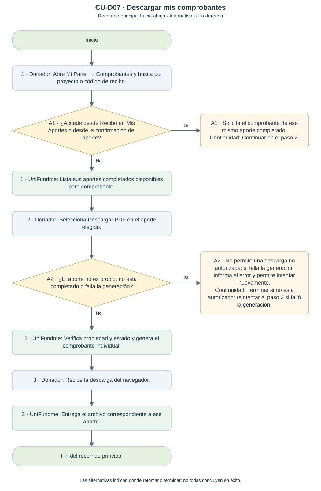
Historia y criterios de aceptación: HU-D07 (4 criterios). Diagramas de navegación: D05.
| Paso | Acción de la persona | Respuesta de UniFundme |
|---|---|---|
| 1 | Abre Mi Panel → Novedades. | Carga publicaciones de proyectos respaldados por su cuenta. |
| 2 | Selecciona un proyecto y usa Anterior o Siguiente si hay varias páginas. | Muestra las novedades y páginas correspondientes. |
| 3 | Selecciona Ver proyecto. | Abre la campaña para continuar en Hitos y Avances. |
Distingue el estado sin novedades del error de consulta.
Terminar o volver a consultar el paso 1.
Se sigue el recorrido principal hacia abajo. En cada condición, Sí conduce a la alternativa indicada; No continúa. La alternativa señala el paso o caso al que volver, o si termina.
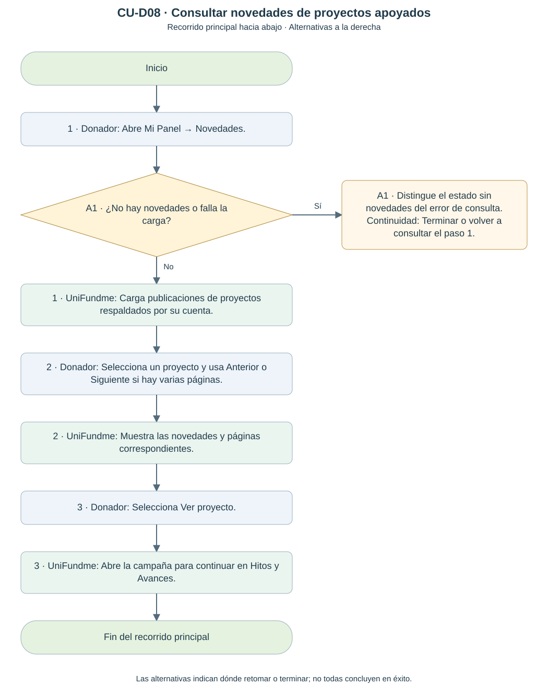
Historia y criterios de aceptación: HU-D08 (4 criterios). Diagramas de navegación: D06.
| Paso | Acción de la persona | Respuesta de UniFundme |
|---|---|---|
| 1 | Abre Mi Panel → Recompensas. | Carga las recompensas vinculadas a sus contribuciones. |
| 2 | Busca por proyecto o recompensa y aplica estado y orden disponibles. | Presenta las coincidencias con su estado registrado. |
| 3 | Selecciona el enlace de seguimiento cuando existe. | Abre el destino de seguimiento guardado. |
No inventa un destino ni presenta una recompensa cancelada como entregada.
Terminar.
Se sigue el recorrido principal hacia abajo. En cada condición, Sí conduce a la alternativa indicada; No continúa. La alternativa señala el paso o caso al que volver, o si termina.
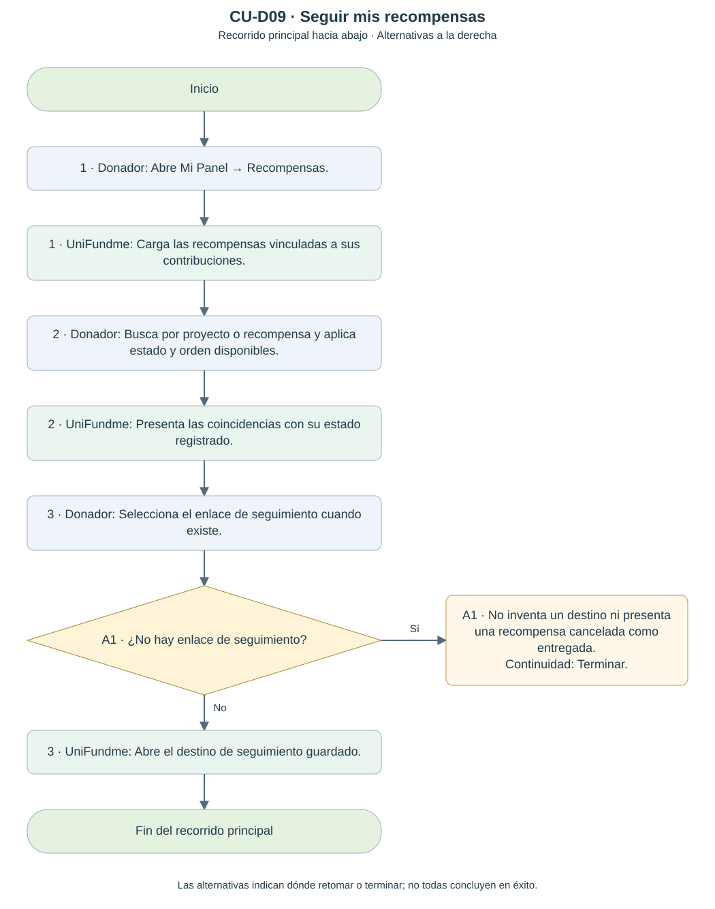
Historia y criterios de aceptación: HU-D09 (4 criterios). Diagramas de navegación: D07.
| Paso | Acción de la persona | Respuesta de UniFundme |
|---|---|---|
| 1 | Abre Mi Panel → Rendimiento. | Presenta aporte promedio, monto reembolsado y evolución acumulada según sus registros. |
| 2 | Consulta Mis Aportes y Capital Disponible cuando hay devoluciones. | Refleja los aportes reembolsados y el saldo simulado devuelto. |
Rendimiento puede mostrar el estado inicial; Mis Aportes y el capital permiten comprobar devoluciones.
Continuar en el paso 2.
Se sigue el recorrido principal hacia abajo. En cada condición, Sí conduce a la alternativa indicada; No continúa. La alternativa señala el paso o caso al que volver, o si termina.
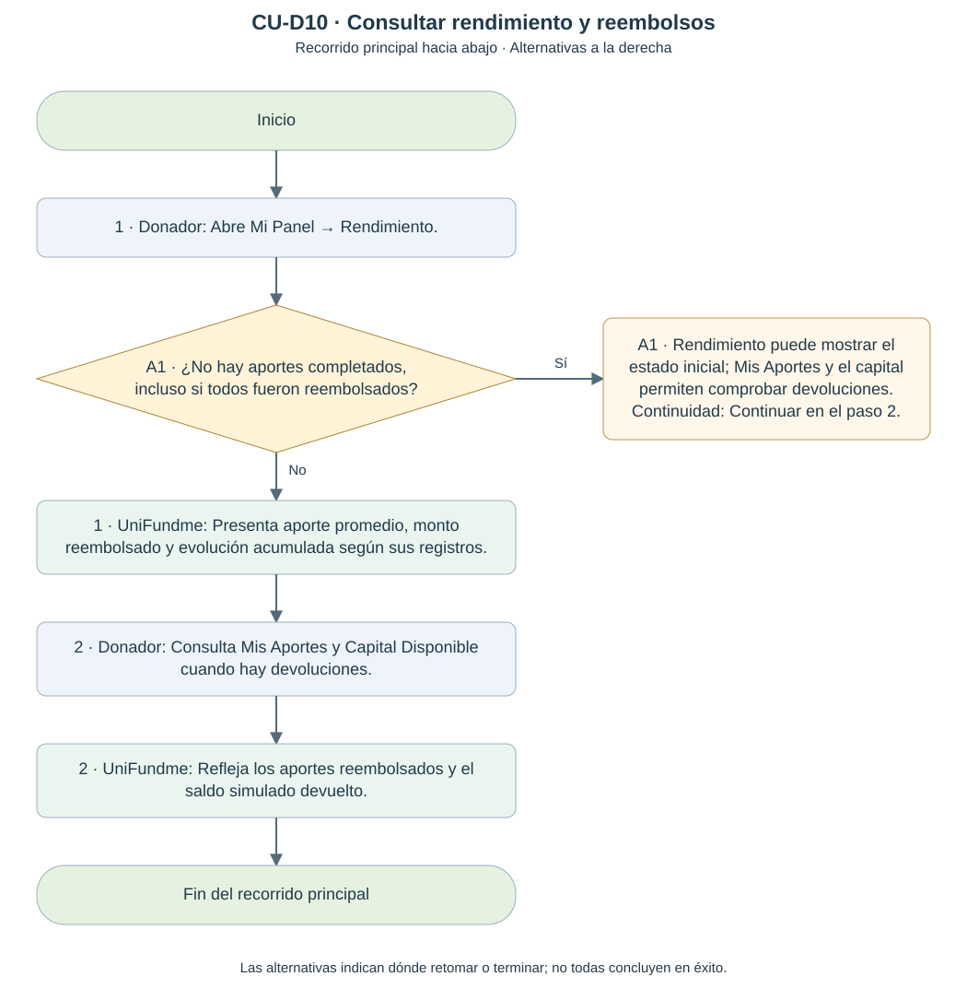
Historia y criterios de aceptación: HU-D10 (4 criterios). Diagramas de navegación: D08.
Los óvalos representan objetivos y las líneas indican quién participa. Su posición vertical no define el orden de ejecución.
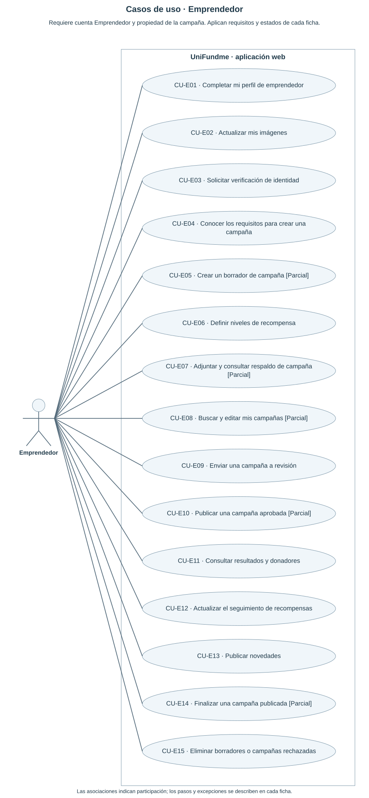
| Paso | Acción de la persona | Respuesta de UniFundme |
|---|---|---|
| 1 | Abre Mi Perfil y la edición de la sección deseada. | Presenta los datos actuales o permite completar el perfil inicial. |
| 2 | Introduce datos válidos y guarda. | Valida y conserva los cambios de esa sección. |
| 3 | Consulta Información, Datos Bancarios y el indicador de avance. | Presenta sus datos; Datos Bancarios ofrece Editar y el indicador muestra el avance del perfil. |
El perfil puede seguir completándose; el indicador no sustituye la aprobación de identidad.
Continuar en CU-E04.
Se sigue el recorrido principal hacia abajo. En cada condición, Sí conduce a la alternativa indicada; No continúa. La alternativa señala el paso o caso al que volver, o si termina.
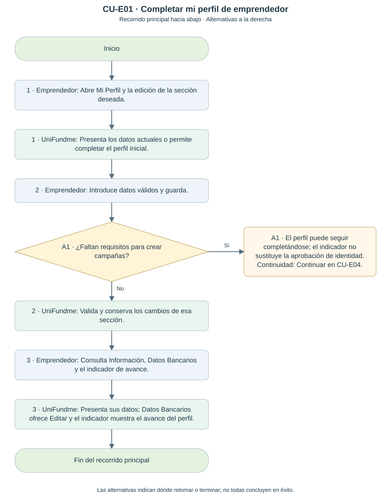
Historia y criterios de aceptación: HU-E01 (4 criterios). Diagramas de navegación: E01.
| Paso | Acción de la persona | Respuesta de UniFundme |
|---|---|---|
| 1 | Abre el control de foto o portada en Mi Perfil. | Permite seleccionar la imagen correspondiente. |
| 2 | Selecciona JPG/JPEG, PNG, WEBP o AVIF de hasta 10 MB y completa la carga. | Valida y guarda la imagen si la carga es correcta. |
| 3 | Consulta nuevamente el perfil. | Presenta la foto o portada guardada. |
Mantiene la imagen anterior.
Elegir otro archivo en el paso 2 o terminar.
Se sigue el recorrido principal hacia abajo. En cada condición, Sí conduce a la alternativa indicada; No continúa. La alternativa señala el paso o caso al que volver, o si termina.
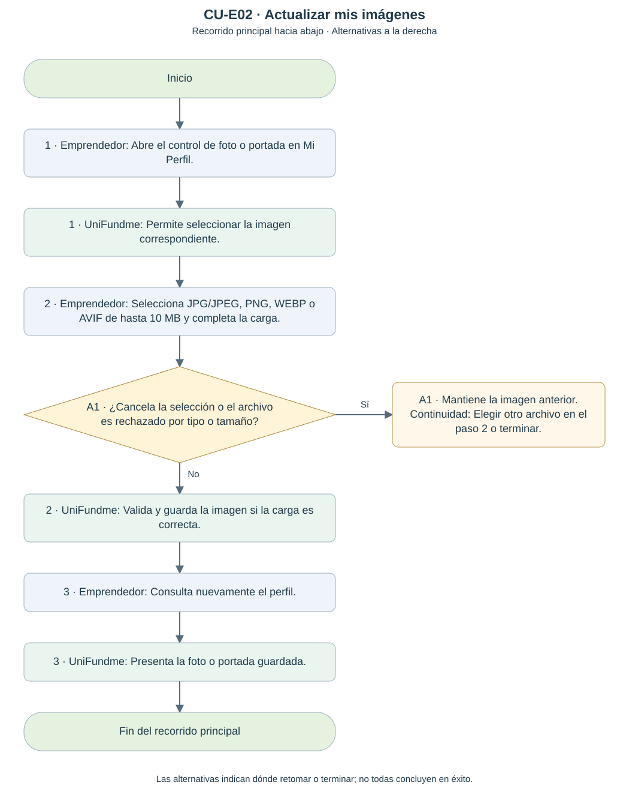
Historia y criterios de aceptación: HU-E02 (4 criterios). Diagramas de navegación: E01.
| Paso | Acción de la persona | Respuesta de UniFundme |
|---|---|---|
| 1 | Usa Iniciar Verificación, Verificar Identidad o Reintentar KYC según el acceso disponible. | Abre el proceso de verificación de identidad. |
| 2 | Adjunta documento de identidad y pulsa Siguiente. | Valida PDF, JPG/JPEG, PNG o WEBP de hasta 10 MB y abre validación facial. |
| 3 | Toma una foto con la cámara o adjunta un archivo facial permitido. | Admite JPG/JPEG, PNG, WEBP, MP4, WEBM o MOV de hasta 50 MB. |
| 4 | Pulsa Enviar a Revisión. | Registra la solicitud pendiente si el envío es correcto; espera una decisión administrativa. |
Permite seleccionar un archivo en lugar de capturar con cámara.
Retomar el paso 3.
Rechaza la carga no válida.
Sustituir el archivo en el paso correspondiente.
La pendiente no se reenvía como nueva; la rechazada permite consultar motivo y reintentar.
Esperar decisión o retomar el paso 2 tras el rechazo.
Se sigue el recorrido principal hacia abajo. En cada condición, Sí conduce a la alternativa indicada; No continúa. La alternativa señala el paso o caso al que volver, o si termina.
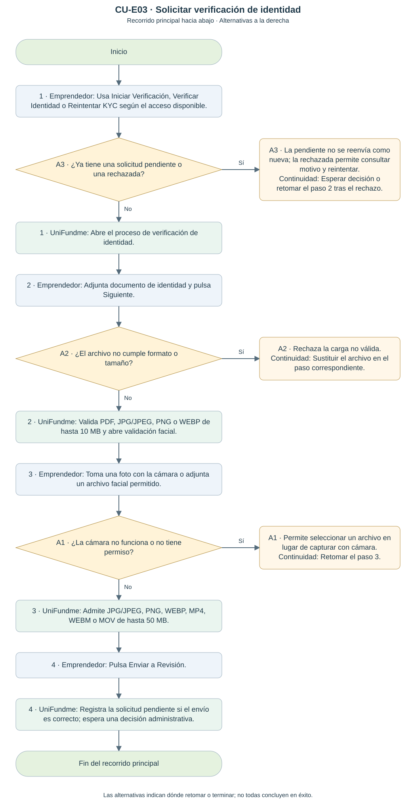
Historia y criterios de aceptación: HU-E03 (5 criterios). Diagramas de navegación: E02.
| Paso | Acción de la persona | Respuesta de UniFundme |
|---|---|---|
| 1 | Abre Mi Perfil o Mis Campañas → Lanzar Campaña. | Comprueba el perfil y los requisitos de elegibilidad. |
| 2 | Completa los requisitos pendientes y vuelve al acceso de creación. | Exige biografía de al menos 30 caracteres, empresa o proyecto de al menos 2, sitio web y LinkedIn válidos HTTP/S, país e identidad aprobada. |
| 3 | Abre la creación con los requisitos satisfechos. | Permite completar el formulario de campaña. |
Dirige al proceso de verificación cuando el acceso lo solicita; registrarse no concede elegibilidad.
Continuar en CU-E03 y volver tras la aprobación.
Se sigue el recorrido principal hacia abajo. En cada condición, Sí conduce a la alternativa indicada; No continúa. La alternativa señala el paso o caso al que volver, o si termina.
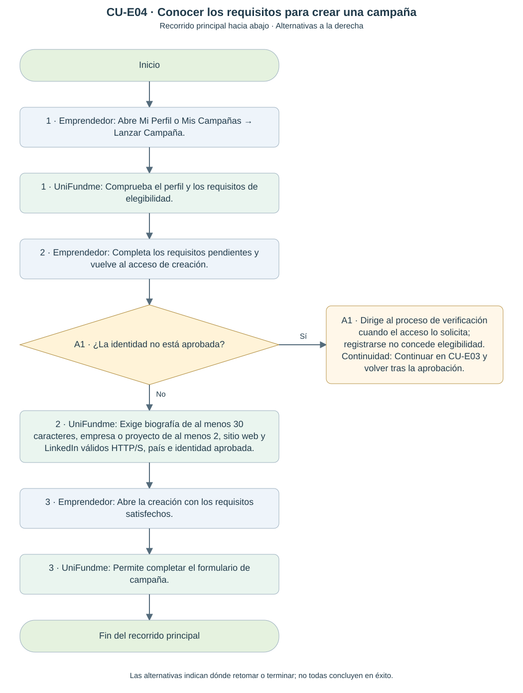
Historia y criterios de aceptación: HU-E04 (3 criterios). Diagramas de navegación: E01 · E02 · E03.
| Paso | Acción de la persona | Respuesta de UniFundme |
|---|---|---|
| 1 | Abre Mis Campañas → Lanzar Campaña. | Presenta el formulario de campaña. |
| 2 | Completa título, eslogan, descripción, meta, categorías y al menos un documento con justificación. | Valida título 5–50, eslogan 10–50, descripción 50–800 caracteres, meta mínima Bs. 100 y al menos una categoría y un respaldo. |
| 3 | Pulsa Guardar Borrador. | Crea el borrador propio y realiza las cargas posteriores de archivos como operaciones separadas. |
| 4 | Abre Vista Previa. | Permite comprobar datos, portada y documentos que realmente quedaron guardados. |
El formulario bloquea la continuación y solicita corregir lo necesario; la fecha es opcional para guardar el borrador.
Corregir y retomar el paso 2.
Puede existir campaña sin todos los archivos esperados; no hay garantía de una confirmación integral en la interfaz actual.
Comprobar el borrador en el paso 4 antes de repetir la creación; consultar pendiente HU-P12.
Se sigue el recorrido principal hacia abajo. En cada condición, Sí conduce a la alternativa indicada; No continúa. La alternativa señala el paso o caso al que volver, o si termina.
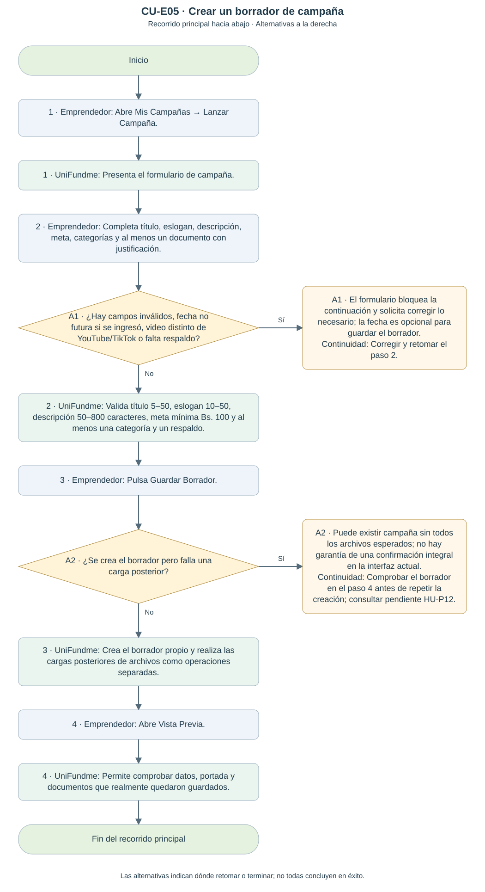
Historia y criterios de aceptación: HU-E05 (5 criterios). Diagramas de navegación: E03.
Capacidades relacionadas pendientes: HU-P12.
| Paso | Acción de la persona | Respuesta de UniFundme |
|---|---|---|
| 1 | Abre Estructura de Recompensas y usa Agregar Nivel. | Presenta los campos del nivel. |
| 2 | Completa título, descripción y porcentajes válidos. | Añade el nivel a la lista del formulario si 0 ≤ mínimo < máximo ≤ 100. |
| 3 | Guarda la campaña. | Conserva las definiciones guardadas y permite consultarlas en Recompensas de Vista Previa cuando existen niveles. |
Editar Nivel o Eliminar Nivel modifica la lista del formulario.
Retomar el paso 2 o 3.
No incorpora el nivel con esos porcentajes.
Corregir y retomar el paso 2.
Se sigue el recorrido principal hacia abajo. En cada condición, Sí conduce a la alternativa indicada; No continúa. La alternativa señala el paso o caso al que volver, o si termina.
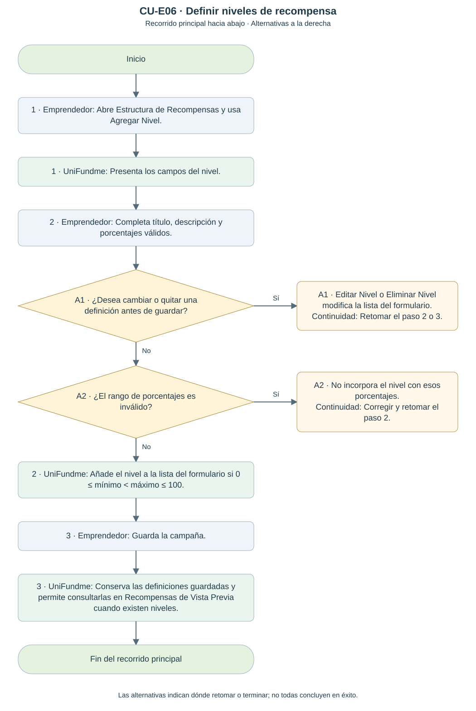
Historia y criterios de aceptación: HU-E06 (5 criterios). Diagramas de navegación: E03 · E06 · E08.
| Paso | Acción de la persona | Respuesta de UniFundme |
|---|---|---|
| 1 | Selecciona un archivo y escribe su justificación; pulsa Añadir Documento. | Añade el respaldo a la lista pendiente del formulario. |
| 2 | Guarda la campaña. | Intenta cargar los respaldos; admite PDF, JPG/JPEG, PNG, WEBP, DOC o DOCX de hasta 20 MB. |
| 3 | Abre Vista Previa → Documentación y usa Ver Documento. | Muestra los documentos realmente guardados, estado y observaciones disponibles. |
Solicita ambos datos antes de añadir.
Completar y retomar el paso 1.
No lo incluye en ese envío; no borra documentos previamente guardados.
Retomar el paso 1 o 2.
El archivo no queda como respaldo válido; puede existir borrador por guardado parcial.
Comprobar la lista del paso 3; consultar pendiente HU-P12.
Se sigue el recorrido principal hacia abajo. En cada condición, Sí conduce a la alternativa indicada; No continúa. La alternativa señala el paso o caso al que volver, o si termina.
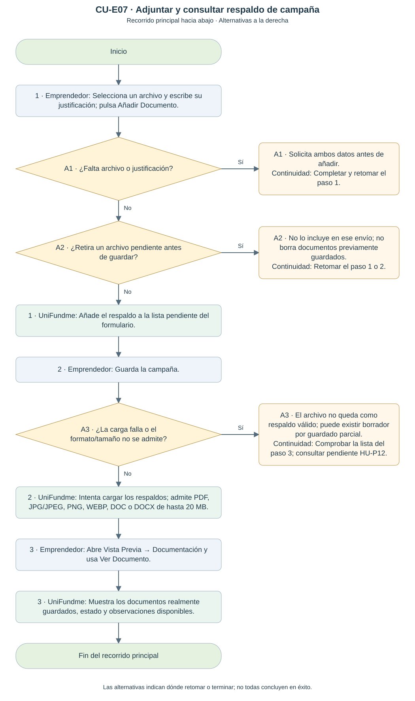
Historia y criterios de aceptación: HU-E07 (5 criterios). Diagramas de navegación: E03 · E06.
Capacidades relacionadas pendientes: HU-P12.
| Paso | Acción de la persona | Respuesta de UniFundme |
|---|---|---|
| 1 | Abre Mis Campañas y busca por título o selecciona una pestaña de estado. | Filtra la lista cargada; alternar tarjetas/lista solo cambia la presentación. |
| 2 | Abre Vista Previa de un Borrador o una Rechazada y selecciona Editar. | Presenta el formulario editable de esa campaña. |
| 3 | Modifica datos válidos y guarda con el respaldo requerido. | Conserva los cambios correctos y permite comprobarlos en Vista Previa. |
No ofrece la edición mediante el formulario de borrador.
Terminar o consultar la campaña sin editar.
Usa Descartar y confirma la salida sin guardar las modificaciones del formulario.
Terminar sin guardar.
Se sigue el recorrido principal hacia abajo. En cada condición, Sí conduce a la alternativa indicada; No continúa. La alternativa señala el paso o caso al que volver, o si termina.
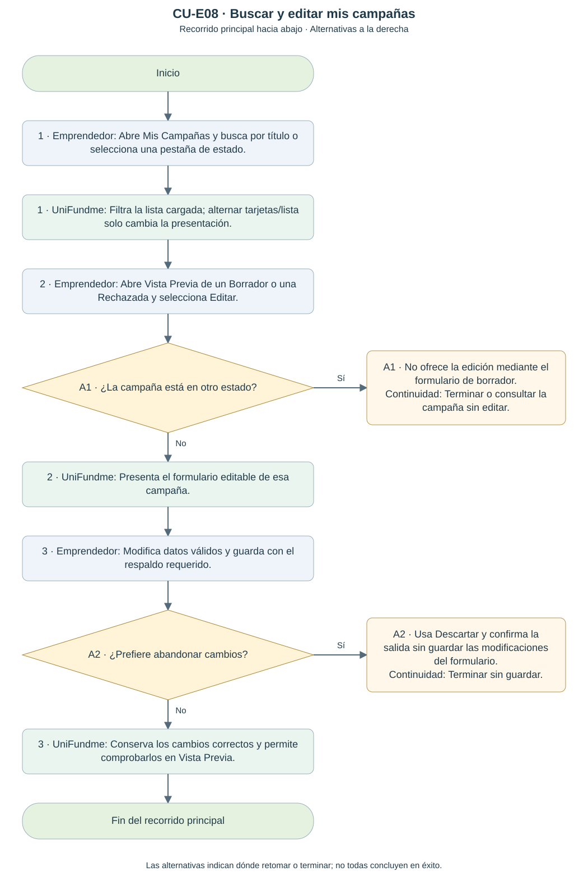
Historia y criterios de aceptación: HU-E08 (5 criterios). Diagramas de navegación: E06.
Capacidades relacionadas pendientes: HU-P06.
| Paso | Acción de la persona | Respuesta de UniFundme |
|---|---|---|
| 1 | Abre Vista Previa y revisa la propuesta guardada. | Presenta datos y acciones disponibles de la campaña. |
| 2 | Pulsa Enviar Revisión. | Valida el envío y registra la campaña como pendiente de revisión con su historial. |
| 3 | Consulta el estado tras el envío. | Mantiene la espera de una decisión administrativa; no publica la campaña. |
Enviar a Revisión permite guardar y enviar si la operación completa es correcta.
Continuar en el paso 3.
Guarda primero con Guardar Borrador y envía desde la tarjeta o Vista Previa.
Retomar el paso 2.
El envío no equivale a una nueva aprobación; se deben corregir requisitos o esperar la decisión según el estado.
Corregir en CU-E08 o esperar; tras rechazo puede leer motivo, editar y reenviar.
Se sigue el recorrido principal hacia abajo. En cada condición, Sí conduce a la alternativa indicada; No continúa. La alternativa señala el paso o caso al que volver, o si termina.
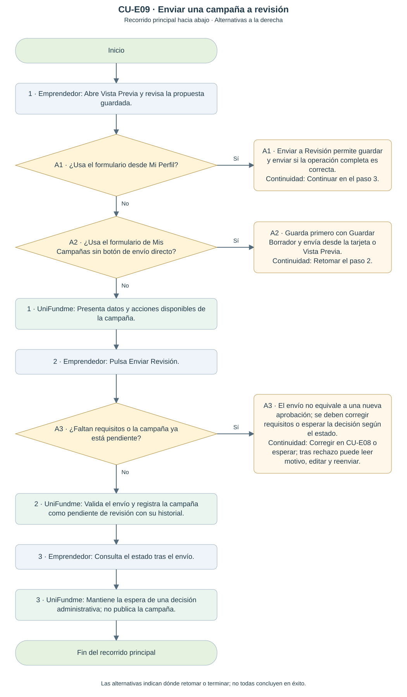
Historia y criterios de aceptación: HU-E09 (4 criterios). Diagramas de navegación: E04.
| Paso | Acción de la persona | Respuesta de UniFundme |
|---|---|---|
| 1 | Localiza la campaña Aprobada. | Presenta Publicar Campaña en la tarjeta o Lanzar en Vista Previa. |
| 2 | Pulsa Publicar Campaña o Lanzar. | Comprueba estado y fecha y procesa el lanzamiento. |
| 3 | Consulta el resultado. | La campaña pasa a Publicada y puede aparecer en Explorar si la operación es correcta. |
Rechaza el lanzamiento. En Aprobada la edición está bloqueada y no hay recorrido web completo para corregir la fecha.
Terminar; la solución del recorrido está pendiente en HU-P07.
Se sigue el recorrido principal hacia abajo. En cada condición, Sí conduce a la alternativa indicada; No continúa. La alternativa señala el paso o caso al que volver, o si termina.
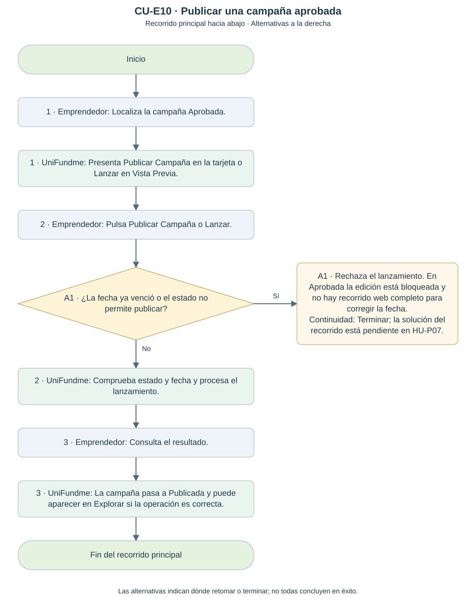
Historia y criterios de aceptación: HU-E10 (3 criterios). Diagramas de navegación: E05.
Capacidades relacionadas pendientes: HU-P07.
| Paso | Acción de la persona | Respuesta de UniFundme |
|---|---|---|
| 1 | Abre Vista Previa → Progreso Económico. | Presenta recaudación, evolución y desglose; las proyecciones son estimaciones. |
| 2 | Abre Donadores Activos y recorre sus páginas. | Lista los donadores vinculados a su campaña. |
| 3 | Selecciona una ficha de donador. | Muestra la información que ofrece el sistema para esa ficha. |
En Finanzas selecciona una de sus campañas y consulta sus métricas.
Terminar tras la consulta.
El control anuncia Próximamente; no inicia una conversación operativa.
Terminar; función pendiente HU-P05.
Se sigue el recorrido principal hacia abajo. En cada condición, Sí conduce a la alternativa indicada; No continúa. La alternativa señala el paso o caso al que volver, o si termina.
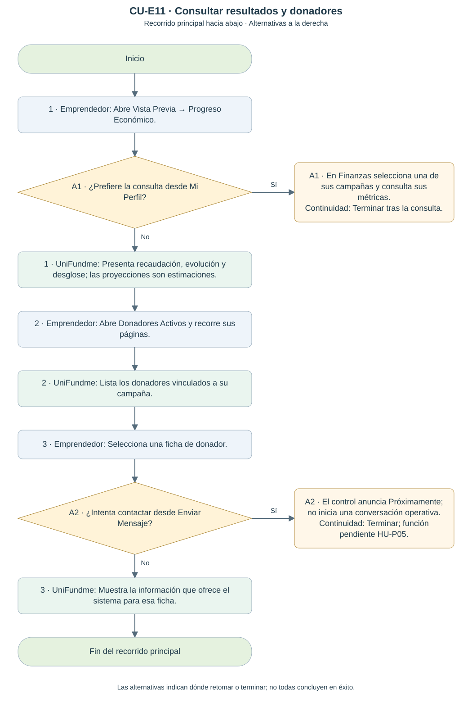
Historia y criterios de aceptación: HU-E11 (4 criterios). Diagramas de navegación: E07.
| Paso | Acción de la persona | Respuesta de UniFundme |
|---|---|---|
| 1 | Abre Vista Previa → Recompensas → Donadores con Recompensas. | Lista donador, recompensa, monto y estado de cada registro. |
| 2 | Abre el selector de un registro y elige una transición permitida. | Ofrece pendiente a preparación, preparación a enviada, enviada a entregada, o cancelación cuando está habilitada. |
| 3 | Completa el cambio. | Guarda el estado; el donador puede consultarlo desde Mi Panel → Recompensas. |
No ofrece reactivarlo ni cambiar su estado.
Terminar sin modificarlo.
Muestra el error e intenta recuperar el estado vigente; no confirma un cambio fallido.
Revisar el estado y volver al paso 2 si todavía corresponde.
Se sigue el recorrido principal hacia abajo. En cada condición, Sí conduce a la alternativa indicada; No continúa. La alternativa señala el paso o caso al que volver, o si termina.
Historia y criterios de aceptación: HU-E12 (5 criterios). Diagramas de navegación: E08.
| Paso | Acción de la persona | Respuesta de UniFundme |
|---|---|---|
| 1 | En Mis Campañas pulsa Publicar Novedad en la tarjeta. | Abre el formulario de publicación. |
| 2 | Escribe título de al menos 3 caracteres y contenido de al menos 10; elige texto o el tipo de adjunto. | Valida campos y solicita archivo si el tipo elegido lo requiere. |
| 3 | Pulsa Publicar. | Registra la novedad pública si la operación es correcta. |
| 4 | Consulta Hitos y Avances o Transparencia y Fondos → Bitácora. | Presenta la novedad; los donadores vinculados pueden consultarla en Mi Panel → Novedades. |
Solicita completar los datos antes de publicar.
Corregir y retomar el paso 2.
Se sigue el recorrido principal hacia abajo. En cada condición, Sí conduce a la alternativa indicada; No continúa. La alternativa señala el paso o caso al que volver, o si termina.
Historia y criterios de aceptación: HU-E13 (4 criterios). Diagramas de navegación: E09.
| Paso | Acción de la persona | Respuesta de UniFundme |
|---|---|---|
| 1 | Pulsa Finalizar Campaña en Mis Campañas. | Solicita confirmar la finalización. |
| 2 | Confirma la operación. | Procesa la finalización y actualiza el estado y su historial. |
| 3 | Consulta el resultado cuando la recaudación es insuficiente. | La campaña queda Fallida, reembolsa los aportes completados al saldo simulado y cancela sus recompensas. |
No realiza la finalización.
Terminar.
La tarjeta no ofrece esta acción aunque el servidor admita finalizar; no hay recorrido web completo aquí.
Terminar; recorrido pendiente HU-P07.
Se sigue el recorrido principal hacia abajo. En cada condición, Sí conduce a la alternativa indicada; No continúa. La alternativa señala el paso o caso al que volver, o si termina.
Historia y criterios de aceptación: HU-E14 (3 criterios). Diagramas de navegación: E10.
Capacidades relacionadas pendientes: HU-P07.
| Paso | Acción de la persona | Respuesta de UniFundme |
|---|---|---|
| 1 | En Mis Campañas usa Eliminar Campaña o el menú Eliminar. | Solicita confirmación de eliminación. |
| 2 | Confirma la eliminación. | Comprueba permisos, estado y ausencia de actividad que la bloquee. |
| 3 | Consulta nuevamente sus campañas. | La campaña eliminada correctamente deja de aparecer. |
Conserva la campaña.
Terminar.
Bloquea la operación y conserva la campaña.
Terminar.
No ofrece esta eliminación de propuesta desde la tarjeta.
Terminar.
Se sigue el recorrido principal hacia abajo. En cada condición, Sí conduce a la alternativa indicada; No continúa. La alternativa señala el paso o caso al que volver, o si termina.
Historia y criterios de aceptación: HU-E15 (4 criterios). Diagramas de navegación: E11.
Los óvalos representan objetivos y las líneas indican quién participa. Su posición vertical no define el orden de ejecución.
| Paso | Acción de la persona | Respuesta de UniFundme |
|---|---|---|
| 1 | Abre el panel → Estadísticas. | Carga indicadores disponibles de usuarios, campañas y pendientes. |
| 2 | Selecciona un acceso de Usuarios, Campañas, Verificación KYC, Revisión o Auditoría. | Abre el módulo administrativo correspondiente. |
Rechaza el acceso a datos administrativos aunque conozca la dirección.
Terminar sin acceso.
Se sigue el recorrido principal hacia abajo. En cada condición, Sí conduce a la alternativa indicada; No continúa. La alternativa señala el paso o caso al que volver, o si termina.
Historia y criterios de aceptación: HU-A01 (3 criterios). Diagramas de navegación: A01.
| Paso | Acción de la persona | Respuesta de UniFundme |
|---|---|---|
| 1 | Abre Gestión de Usuarios y busca por correo. | Lista coincidencias con correo, identificador abreviado, Fecha de Registro y estado Activo o Suspendido. |
| 2 | Selecciona la suspensión de una cuenta activa y confirma. | Comprueba las restricciones y desactiva la cuenta si está permitido. |
| 3 | Consulta la lista actualizada. | Presenta la cuenta Suspendida; no puede iniciar sesión. |
Conserva el estado anterior.
Terminar.
Bloquea la operación.
Terminar sin suspender.
No realiza acciones de suspensión.
Terminar tras el paso 1.
Se sigue el recorrido principal hacia abajo. En cada condición, Sí conduce a la alternativa indicada; No continúa. La alternativa señala el paso o caso al que volver, o si termina.
Historia y criterios de aceptación: HU-A02 (4 criterios). Diagramas de navegación: A02.
| Paso | Acción de la persona | Respuesta de UniFundme |
|---|---|---|
| 1 | Abre Gestión de Campañas; busca por título, creador o correo y selecciona un estado. | Filtra las campañas y permite recargarlas con Actualizar. |
| 2 | Abre una campaña. | Presenta sus datos, historial, documentos y pestañas habilitadas. |
| 3 | Solicita y confirma eliminar una campaña sin actividad financiera. | Comprueba restricciones y la elimina si corresponde. |
Bloquea la operación y conserva la campaña.
Terminar.
Los botones de aprobación de Gestión de Campañas no están conectados; debe usar Revisión de Campañas.
Continuar en CU-A04.
Conserva el registro.
Terminar sin eliminar.
Se sigue el recorrido principal hacia abajo. En cada condición, Sí conduce a la alternativa indicada; No continúa. La alternativa señala el paso o caso al que volver, o si termina.
Historia y criterios de aceptación: HU-A03 (4 criterios). Diagramas de navegación: A06.
Capacidades relacionadas pendientes: HU-P11.
| Paso | Acción de la persona | Respuesta de UniFundme |
|---|---|---|
| 1 | Abre Revisión de Campañas, busca por título o emprendedor y recorre sus páginas. | Lista las solicitudes pendientes coincidentes. |
| 2 | Abre la propuesta y revisa propietario, documentos e historial. | Presenta los datos necesarios para su decisión. |
| 3 | Selecciona Aprobar en el detalle; si usa la aprobación rápida del listado, confirma su diálogo. | Registra Aprobada; el emprendedor todavía debe publicarla. |
Escribe un motivo y confirma; registra Rechazada y deja el motivo disponible para corregir y reenviar.
Terminar con rechazo.
La interfaz impide completar el rechazo.
Completar motivo y retomar el paso 3.
Se sigue el recorrido principal hacia abajo. En cada condición, Sí conduce a la alternativa indicada; No continúa. La alternativa señala el paso o caso al que volver, o si termina.
Historia y criterios de aceptación: HU-A04 (5 criterios). Diagramas de navegación: A03.
| Paso | Acción de la persona | Respuesta de UniFundme |
|---|---|---|
| 1 | Abre Verificaciones KYC y pulsa Revisar. | Presenta datos, documento de identidad y validación facial autorizados. |
| 2 | Consulta los archivos y la información presentada. | Permite su revisión privada. |
| 3 | Aprueba la solicitud. | Guarda la revisión, verifica el perfil y retira la solicitud de pendientes. |
Usa la renovación o descarga permitida para intentar recuperar el archivo sin hacerlo público.
Retomar el paso 2.
Registra rechazo con motivo; el emprendedor puede reenviar documentación.
Terminar con rechazo.
Impide decidir nuevamente sobre ese estado y requiere actualizar la lista.
Volver al paso 1.
Se sigue el recorrido principal hacia abajo. En cada condición, Sí conduce a la alternativa indicada; No continúa. La alternativa señala el paso o caso al que volver, o si termina.
Historia y criterios de aceptación: HU-A05 (5 criterios). Diagramas de navegación: A04.
| Paso | Acción de la persona | Respuesta de UniFundme |
|---|---|---|
| 1 | En el detalle administrativo abre Documentación y Ver Documento. | Presenta archivo autorizado y justificación. |
| 2 | Revisa el respaldo y selecciona Aprobar. | Registra Aprobado y actualiza la lista, sin publicarlo automáticamente. |
| 3 | Consulta el estado del documento en la lista actualizada. | Presenta el resultado de la revisión. |
Escribe el motivo solicitado y confirma; registra Rechazado con observaciones para el emprendedor.
Terminar con rechazo.
Se sigue el recorrido principal hacia abajo. En cada condición, Sí conduce a la alternativa indicada; No continúa. La alternativa señala el paso o caso al que volver, o si termina.
Historia y criterios de aceptación: HU-A06 (4 criterios). Diagramas de navegación: A05.
| Paso | Acción de la persona | Respuesta de UniFundme |
|---|---|---|
| 1 | Abre Documentación del detalle administrativo. | Presenta estado y control Publicar evidencia cuando corresponde. |
| 2 | Pulsa Publicar evidencia. | Guarda la autorización pública si cumple las condiciones. |
| 3 | Consulta Evidencias de la campaña pública. | El documento autorizado queda disponible para su consulta pública. |
Usa Retirar publicación; deja de estar accesible por su publicación pública.
Terminar con publicación retirada.
No autoriza publicarlo como evidencia válida.
Revisar el documento en CU-A06 o terminar.
Se sigue el recorrido principal hacia abajo. En cada condición, Sí conduce a la alternativa indicada; No continúa. La alternativa señala el paso o caso al que volver, o si termina.
Historia y criterios de aceptación: HU-A07 (3 criterios). Diagramas de navegación: A05.
| Paso | Acción de la persona | Respuesta de UniFundme |
|---|---|---|
| 1 | Busca por concepto, factura, notas o campaña y aplica tipo, estado o comprobante; recorre las páginas. | Presenta movimientos coincidentes. |
| 2 | Pulsa Revisar en un movimiento. | Carga importe, categoría, comprobante disponible e Historial de cambios y revisiones. |
| 3 | Elige Aprobar / Verificado y pulsa Confirmar Dictamen. | Comprueba permisos y versión y registra el dictamen si el movimiento admite revisión. |
| 4 | Consulta el resultado. | Actualiza lista, resumen e historial. |
Exige explicación para completar ese dictamen.
Añadir explicación y retomar el paso 3.
No sobrescribe otra revisión; requiere recargar o limitarse a consultar.
Volver al paso 2 o terminar con consulta.
Se sigue el recorrido principal hacia abajo. En cada condición, Sí conduce a la alternativa indicada; No continúa. La alternativa señala el paso o caso al que volver, o si termina.
Historia y criterios de aceptación: HU-A08 (5 criterios). Diagramas de navegación: A07.
| Paso | Acción de la persona | Respuesta de UniFundme |
|---|---|---|
| 1 | Pulsa el icono Auditar Plan de Fondos de la Campaña. | Abre Auditoría Presupuestaria de la Campaña correspondiente. |
| 2 | Consulta categorías, Presupuestado, Ejecutado, Varianza, Comprobantes Faltantes y Estado. | Presenta la comparación basada en los registros disponibles. |
| 3 | Consulta los movimientos sin categoría si existen y pulsa Cerrar Auditoría. | Los muestra en una sección separada y regresa al listado al cerrar. |
La consulta se limita a los registros disponibles; no genera datos financieros ni indicadores de hitos.
Terminar la consulta con Cerrar Auditoría.
Se sigue el recorrido principal hacia abajo. En cada condición, Sí conduce a la alternativa indicada; No continúa. La alternativa señala el paso o caso al que volver, o si termina.
Historia y criterios de aceptación: HU-A09 (4 criterios). Diagramas de navegación: A08.
Los óvalos representan objetivos y las líneas indican quién participa. Su posición vertical no define el orden de ejecución.
| Paso | Acción de la persona | Respuesta de UniFundme |
|---|---|---|
| 1 | Abre Gestión de Admins. | Lista correo, nivel y estado de las cuentas administrativas. |
| 2 | Consulta las cuentas o elige otro módulo administrativo en la barra lateral. | Permite continuar con las funciones del Administrador que también posee. |
Rechaza la gestión de administradores.
Terminar sin acceso.
Se sigue el recorrido principal hacia abajo. En cada condición, Sí conduce a la alternativa indicada; No continúa. La alternativa señala el paso o caso al que volver, o si termina.
Historia y criterios de aceptación: HU-S01 (3 criterios). Diagramas de navegación: S01.
| Paso | Acción de la persona | Respuesta de UniFundme |
|---|---|---|
| 1 | Abre Gestión de Admins → Crear Administrador. | Presenta los campos de correo y contraseña. |
| 2 | Introduce correo y contraseña válida y pulsa Crear Administrador. | Valida datos y que el correo no esté registrado. |
| 3 | Consulta el listado tras la creación correcta. | Muestra la nueva cuenta de Administrador común. |
Rechaza la creación sin duplicar cuentas.
Corregir y retomar el paso 2.
Se sigue el recorrido principal hacia abajo. En cada condición, Sí conduce a la alternativa indicada; No continúa. La alternativa señala el paso o caso al que volver, o si termina.
Historia y criterios de aceptación: HU-S02 (3 criterios). Diagramas de navegación: S02.
| Paso | Acción de la persona | Respuesta de UniFundme |
|---|---|---|
| 1 | En Gestión de Admins pulsa Revocar sobre el administrador elegido. | Solicita confirmar la revocación. |
| 2 | Confirma la operación. | Comprueba restricciones y retira sus permisos administrativos. |
| 3 | Consulta el listado actualizado. | Refleja el retiro de permisos conservando la cuenta de usuario. |
Mantiene los privilegios anteriores.
Terminar.
Bloquea la operación.
Terminar sin cambiar permisos.
Se sigue el recorrido principal hacia abajo. En cada condición, Sí conduce a la alternativa indicada; No continúa. La alternativa señala el paso o caso al que volver, o si termina.
Historia y criterios de aceptación: HU-S03 (3 criterios). Diagramas de navegación: S03.
Se aplican a todos los casos que consultan o modifican datos privados. HU-T01.
El Superadministrador puede realizar las funciones del Administrador. Tener sesión no concede permisos de otro rol ni acceso a recursos ajenos. Las excepciones de cada ficha complementan estas reglas.
Cuando una consulta falla, el error no equivale a una lista vacía. Una operación no se considera completada solo por pulsar un botón. En los guardados parciales de campañas se comprueba lo realmente almacenado antes de repetir la creación.
Estas capacidades no tienen aquí una secuencia operativa ni un diagrama que sugiera que ya funcionan. Su definición futura está en las historias vinculadas.
No disponible actualmente. El recorrido definitivo, los permisos solicitados y los destinos por rol se especificarán cuando el servicio esté habilitado.
La presencia del botón de chat no acredita funcionamiento. No incluye atención humana ni creación de tickets.
Ni el perfil de donador ni el de emprendedor tienen actualmente un botón de eliminación conectado.
Objetivo propuesto. No hay un botón ni recorrido web actual para reactivar.
Propuesta para Donadores Activos → ficha; Enviar Mensaje actualmente anuncia Próximamente.
Mis Campañas no muestra hoy paginación ni selector de orden; no se describen como disponibles.
La política de corrección de una campaña Aprobada requiere definición. Que el servidor admita finalizar no basta para afirmar que existe el botón web.
Los componentes actuales pueden utilizar datos de respaldo visual. Se requiere completar la vinculación a los registros de cada proyecto.
Existen rutas y funciones de acceso a datos, pero eso no constituye un recorrido web disponible. Los campos, permisos y estados de los formularios finales deben acordarse antes de implementar.
El servidor dispone de generación de reportes, pero no se encontró un acceso web conectado. D05 sí cubre comprobantes individuales actuales.
Actualmente se decide desde Revisión de Campañas, cuyo listado solicita pendientes. No se afirma que exista una gestión web completa de todos los estados administrativos.
Se requiere completar el manejo de éxito parcial y la comunicación de fallos en los contextos de formulario que no muestran todos los errores.
Cambiar la contraseña dentro de una sesión no equivale a recuperación por correo. No se documenta un botón Olvidé mi contraseña como disponible.
El interruptor y su guardado no prueban que haya un servicio de entrega de correo operativo. Tipos de eventos y reintentos requieren definición.
Es una capacidad distinta del asistente público V07. El componente existente no demuestra disponibilidad del recorrido.
Hoy se puede consultar seguimiento existente y cambiar estados permitidos como emprendedor. La visualización de Incidencia Reportada no implica que exista el formulario para reportarla.
El indicador Verificado / Sin verificar ya puede mostrarse en Configuración. El canal de entrega, vigencia y reenvío del futuro proceso requieren definición.
62 casos cubren las 62 historias actuales o parciales de objetivos de usuario. HU-T01 aporta las reglas compartidas; las otras 17 historias documentan capacidades pendientes. Los 47 diagramas anteriores quedan vinculados a estos casos o a esas capacidades.
| Caso | Funcionalidad | Historia | Estado |
|---|---|---|---|
| CU-V01 | Conocer la plataforma y acceder al catálogo | HU-V01 | Actual |
| CU-V02 | Buscar y filtrar campañas | HU-V02 | Actual |
| CU-V03 | Navegar por el detalle de una campaña | HU-V03 | Actual |
| CU-V04 | Consultar Historia y Proyecto | HU-V04 | Actual |
| CU-V05 | Descubrir campañas en DonaTok | HU-V05 | Actual |
| CU-V06 | Consultar historias recientes | HU-V06 | Actual |
| CU-V07 | Compartir campañas | HU-V07 | Actual |
| CU-V08 | Consultar Plan de Fondos e hitos | HU-V08 | Parcial |
| CU-V09 | Consultar la recaudación pública | HU-V09 | Actual |
| CU-V10 | Consultar evidencias públicas | HU-V10 | Actual |
| CU-V11 | Consultar novedades de una campaña | HU-V11 | Actual |
| CU-V12 | Reproducir la presentación de una campaña | HU-V12 | Actual |
| CU-V13 | Abrir proyectos relacionados | HU-V13 | Actual |
| CU-C01 | Crear una cuenta por correo | HU-C01 | Actual |
| CU-C02 | Iniciar sesión por correo | HU-C02 | Actual |
| CU-C03 | Cerrar sesión | HU-C03 | Actual |
| CU-C04 | Cambiar la contraseña local | HU-C04 | Actual |
| CU-C05 | Contactar al emprendedor | HU-C05 | Actual |
| CU-C06 | Continuar conversaciones | HU-C06 | Actual |
| CU-C07 | Consultar notificaciones | HU-C07 | Actual |
| CU-C08 | Gestionar notificaciones | HU-C08 | Actual |
| CU-C09 | Configurar preferencias de notificación | HU-C09 | Parcial |
| CU-C10 | Publicar comentarios | HU-C10 | Actual |
| CU-C11 | Marcar Me gusta en comentarios | HU-C11 | Actual |
| CU-C12 | Consultar la configuración de mi cuenta | HU-C12 | Actual |
| CU-D01 | Crear y editar mi perfil | HU-D01 | Actual |
| CU-D02 | Personalizar mis imágenes | HU-D02 | Actual |
| CU-D03 | Consultar y aumentar mi capital simulado | HU-D03 | Actual |
| CU-D04 | Donar a una campaña | HU-D04 | Actual |
| CU-D05 | Elegir una recompensa al aportar | HU-D05 | Actual |
| CU-D06 | Consultar Mis Aportes | HU-D06 | Actual |
| CU-D07 | Descargar mis comprobantes | HU-D07 | Actual |
| CU-D08 | Consultar novedades de proyectos apoyados | HU-D08 | Actual |
| CU-D09 | Seguir mis recompensas | HU-D09 | Actual |
| CU-D10 | Consultar rendimiento y reembolsos | HU-D10 | Actual |
| CU-E01 | Completar mi perfil de emprendedor | HU-E01 | Actual |
| CU-E02 | Actualizar mis imágenes | HU-E02 | Actual |
| CU-E03 | Solicitar verificación de identidad | HU-E03 | Actual |
| CU-E04 | Conocer los requisitos para crear una campaña | HU-E04 | Actual |
| CU-E05 | Crear un borrador de campaña | HU-E05 | Parcial |
| CU-E06 | Definir niveles de recompensa | HU-E06 | Actual |
| CU-E07 | Adjuntar y consultar respaldo de campaña | HU-E07 | Parcial |
| CU-E08 | Buscar y editar mis campañas | HU-E08 | Parcial |
| CU-E09 | Enviar una campaña a revisión | HU-E09 | Actual |
| CU-E10 | Publicar una campaña aprobada | HU-E10 | Parcial |
| CU-E11 | Consultar resultados y donadores | HU-E11 | Actual |
| CU-E12 | Actualizar el seguimiento de recompensas | HU-E12 | Actual |
| CU-E13 | Publicar novedades | HU-E13 | Actual |
| CU-E14 | Finalizar una campaña publicada | HU-E14 | Parcial |
| CU-E15 | Eliminar borradores o campañas rechazadas | HU-E15 | Actual |
| CU-A01 | Consultar el panel de estadísticas | HU-A01 | Actual |
| CU-A02 | Consultar y suspender usuarios | HU-A02 | Actual |
| CU-A03 | Consultar y eliminar campañas sin actividad financiera | HU-A03 | Parcial |
| CU-A04 | Aprobar o rechazar solicitudes de campaña | HU-A04 | Actual |
| CU-A05 | Revisar solicitudes KYC | HU-A05 | Actual |
| CU-A06 | Revisar documentos de campaña | HU-A06 | Actual |
| CU-A07 | Autorizar la publicación de evidencias | HU-A07 | Actual |
| CU-A08 | Auditar movimientos financieros | HU-A08 | Actual |
| CU-A09 | Comparar presupuesto y ejecución | HU-A09 | Actual |
| CU-S01 | Consultar administradores | HU-S01 | Actual |
| CU-S02 | Crear un administrador | HU-S02 | Actual |
| CU-S03 | Revocar permisos administrativos | HU-S03 | Actual |